Statistical Modeling: The Two Cultures
Statistical Science
2001, Vol. 16, No. 3, 199–231
Leo Breiman is Professor, Department of Statistics, University of California, Berkeley, California 94720-4735 (e-mail: leo@stat.berkeley.edu).
Statistical Modeling: The Two Cultures
Abstract. There are two cultures in the use of statistical modeling to reach conclusions from data. One assumes that the data are generated by a given stochastic data model. The other uses algorithmic models and treats the data mechanism as unknown. The statistical community has been committed to the almost exclusive use of data models. This commitment has led to irrelevant theory, questionable conclusions, and has kept statisticians from working on a large range of interesting current problems. Algorithmic modeling, both in theory and practice, has developed rapidly in fields outside statistics. It can be used both on large complex data sets and as a more accurate and informative alternative to data modeling on smaller data sets. If our goal as a field is to use data to solve problems, then we need to move away from exclusive dependence on data models and adopt a more diverse set of tools.
1. INTRODUCTION
Statistics starts with data. Think of the data as being generated by a black box in which a vector of input variables \(\mathbf{x}\) (independent variables) go in one side, and on the other side the response variables \(\mathbf{y}\) come out. Inside the black box, nature functions to associate the predictor variables with the response variables, so the picture is like this:
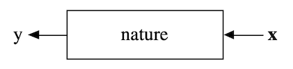
There are two goals in analyzing the data:
Prediction. To be able to predict what the responses are going to be to future input variables;
Information. To extract some information about how nature is associating the response variables to the input variables.
There are two different approaches toward these goals:
The Data Modeling Culture
The analysis in this culture starts with assuming a stochastic data model for the inside of the black box. For example, a common data model is that data are generated by independent draws from
response variables = \(f\)(predictor variables, random noise, parameters)
The values of the parameters are estimated from the data and the model then used for information and/or prediction. Thus the black box is filled in like this:
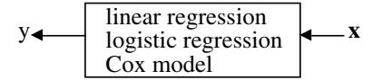
Model validation. Yes–no using goodness-of-fit tests and residual examination.
Estimated culture population. 98% of all statisticians.
The Algorithmic Modeling Culture
The analysis in this culture considers the inside of the box complex and unknown. Their approach is to find a function \(f(\mathbf{x})\)—an algorithm that operates on \(\mathbf{x}\) to predict the responses \(\mathbf{y}\). Their black box looks like this:
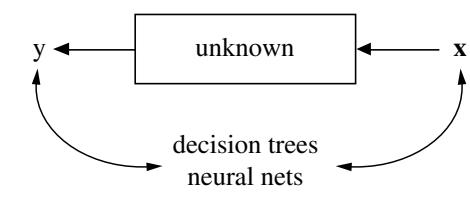
Model validation. Measured by predictive accuracy.
Estimated culture population. 2% of statisticians, many in other fields.
In this paper I will argue that the focus in the statistical community on data models has:
- Led to irrelevant theoryand questionable scientific conclusions;
- Kept statisticians from using more suitable algorithmic models;
- Prevented statisticians from working on exciting new problems;
I will also review some of the interesting new developments in algorithmic modeling in machine learning and look at applications to three data sets.
2. ROAD MAP
It may be revealing to understand how I became a member of the small second culture. After a seven-year stint as an academic probabilist, I resigned and went into full-time free-lance consulting. After thirteen years of consulting I joined the Berkeley Statistics Department in 1980 and have been there since. My experiences as a consultant formed my views about algorithmic modeling. Section 3 describes two of the projects I worked on. These are given to show how my views grew from such problems.
When I returned to the university and began reading statistical journals, the research was distant from what I had done as a consultant. All articles begin and end with data models. My observations about published theoretical research in statistics are in Section 4.
Data modeling has given the statistics field many successes in analyzing data and getting information about the mechanisms producing the data. But there is also misuse leading to questionable conclusions about the underlying mechanism. This is reviewed in Section 5. Following that is a discussion (Section 6) of how the commitment to data modeling has prevented statisticians from entering new scientific and commercial fields where the data being gathered is not suitable for analysis by data models.
In the past fifteen years, the growth in algorithmic modeling applications and methodology has been rapid. It has occurred largely outside statistics in a new community—often called machine learning—that is mostly young computer scientists (Section 7). The advances, particularly over the last five years, have been startling. Three of the most important changes in perception to be learned from these advances are described in Sections 8, 9, and 10, and are associated with the following names:
Rashomon: the multiplicity of good models;
Occam: the conflict between simplicity and accuracy;
Bellman: dimensionality—curse or blessing?
Section 11 is titled “Information from a Black Box” and is important in showing that an algorithmic model can produce more and more reliable information about the structure of the relationship between inputs and outputs than data models. This is illustrated using two medical data sets and a genetic data set. A glossary at the end of the paper explains terms that not all statisticians may be familiar with.
3. PROJECTS IN CONSULTING
As a consultant I designed and helped supervise surveys for the Environmental Protection Agency (EPA) and the state and federal court systems. Controlled experiments were designed for the EPA, and I analyzed traffic data for the U.S. Department of Transportation and the California Transportation Department. Most of all, I worked on a diverse set of prediction projects. Here are some examples:
- Predicting next-day ozone levels.
- Using mass spectra to identify halogen-containing compounds.
- Predicting the class of a ship from high altitude radar returns.
- Using sonar returns to predict the class of a submarine.
- Identity of hand-sent Morse Code.
- Toxicity of chemicals.
- On-line prediction of the cause of a freeway traffic breakdown.
- Speech recognition.
- The sources of delay in criminal trials in state court systems.
To understand the nature of these problems and the approaches taken to solve them, I give a fuller description of the first two on the list.
3.1 The Ozone Project
In the mid- to late 1960s ozone levels became a serious health problem in the Los Angeles Basin. Three different alert levels were established. At the highest, all government workers were directed not to drive to work, children were kept off playgrounds and outdoor exercise was discouraged.
The major source of ozone at that time was automobile tailpipe emissions. These rose into the low atmosphere and were trapped there by an inversion layer. A complex chemical reaction, aided by sunlight, cooked away and produced ozone two to three hours after the morning commute hours. The alert warnings were issued in the morning, but would be more effective if they could be issued 12 hours in advance. In the mid-1970s, the EPA funded a large effort to see if ozone levels could be accurately predicted 12 hours in advance.
Commuting patterns in the Los Angeles Basin are regular, with the total variation in any given daylight hour varying only a few percent from one weekday to another. With the total amount of emissions about constant, the resulting ozone levels depend on the meteorology of the preceding days. A large data base was assembled consisting of lower and upper air measurements at U.S. weather stations as far away as Oregon and Arizona, together with hourly readings of surface temperature, humidity, and wind speed at the dozens of air pollution stations in the Basin and nearby areas.
Altogether, there were daily and hourly readings of over 450 meteorological variables for a period of seven years, with corresponding hourly values of ozone and other pollutants in the Basin. Let \(\mathbf{x}\) be the predictor vector of meteorological variables on the \(n\)th day. There are more than 450 variables in \(\mathbf{x}\) since information several days back is included. Let \(y\) be the ozone level on the \((n + 1)\)st day. Then the problem was to construct a function \(f(\mathbf{x})\) such that for any future day and future predictor variables \(\mathbf{x}\) for that day, \(f(\mathbf{x})\) is an accurate predictor of the next day’s ozone level \(y\).
To estimate predictive accuracy, the first five years of data were used as the training set. The last two years were set aside as a test set. The algorithmic modeling methods available in the pre-1980s decades seem primitive now. In this project large linear regressions were run, followed by variable selection. Quadratic terms in, and interactions among, the retained variables were added and variable selection used again to prune the equations. In the end, the project was a failure—the false alarm rate of the final predictor was too high. I have regrets that this project can’t be revisited with the tools available today.
3.2 The Chlorine Project
The EPA samples thousands of compounds a year and tries to determine their potential toxicity. In the mid-1970s, the standard procedure was to measure the mass spectra of the compound and to try to determine its chemical structure from its mass spectra.
Measuring the mass spectra is fast and cheap. But the determination of chemical structure from the mass spectra requires a painstaking examination by a trained chemist. The cost and availability of enough chemists to analyze all of the mass spectra produced daunted the EPA. Many toxic compounds contain halogens. So the EPA funded a project to determine if the presence of chlorine in a compound could be reliably predicted from its mass spectra.
Mass spectra are produced by bombarding the compound with ions in the presence of a magnetic field. The molecules of the compound split and the lighter fragments are bent more by the magnetic field than the heavier. Then the fragments hit an absorbing strip, with the position of the fragment on the strip determined by the molecular weight of the fragment. The intensity of the exposure at that position measures the frequency of the fragment. The resultant mass spectra has numbers reflecting frequencies of fragments from molecular weight 1 up to the molecular weight of the original compound. The peaks correspond to frequent fragments and there are many zeroes. The available data base consisted of the known chemical structure and mass spectra of 30,000 compounds.
The mass spectrum predictor vector \(\mathbf{x}\) is of variable dimensionality. Molecular weight in the data base varied from 30 to over 10,000. The variable to be predicted is
\(y = 1\): contains chlorine,
\(y = 2\): does not contain chlorine.
The problem is to construct a function \(f(\mathbf{x})\) that is an accurate predictor of \(y\) where \(\mathbf{x}\) is the mass spectrum of the compound.
To measure predictive accuracy the data set was randomly divided into a 25,000 member training set and a 5,000 member test set. Linear discriminant analysis was tried, then quadratic discriminant analysis. These were difficult to adapt to the variable dimensionality. By this time I was thinking about decision trees. The hallmarks of chlorine in mass spectra were researched. This domain knowledge was incorporated into the decision tree algorithm by the design of the set of 1,500 yes–no questions that could be applied to a mass spectra of any dimensionality. The result was a decision tree that gave 95% accuracy on both chlorines and nonchlorines (see Breiman, Friedman, Olshen and Stone, 1984).
3.3 Perceptions on Statistical Analysis
As I left consulting to go back to the university, these were the perceptions I had about working with data to find answers to problems:
- Focus on finding a good solution—that’s what consultants get paid for.
- Live with the data before you plunge into modeling.
- Search for a model that gives a good solution, either algorithmic or data.
- Predictive accuracy on test sets is the criterion for how good the model is.
- Computers are an indispensable partner.
4. RETURN TO THE UNIVERSITY
I had one tip about what research in the university was like. A friend of mine, a prominent statistician from the Berkeley Statistics Department, visited me in Los Angeles in the late 1970s. After I described the decision tree method to him, his first question was, “What’s the model for the data?”
4.1 Statistical Research
Upon my return, I started reading the Annals of Statistics, the flagship journal of theoretical statistics, and was bemused. Every article started with
Assume that the data are generated by the following model:
followed by mathematics exploring inference, hypothesis testing and asymptotics. There is a wide spectrum of opinion regarding the usefulness of the theory published in the Annals of Statistics to the field of statistics as a science that deals with data. I am at the very low end of the spectrum. Still, there have been some gems that have combined nice theory and significant applications. An example is wavelet theory. Even in applications, data models are universal. For instance, in the Journal of the American Statistical Association (JASA), virtually every article contains a statement of the form:
Assume that the data are generated by the following model:
I am deeply troubled by the current and past use of data models in applications, where quantitative conclusions are drawn and perhaps policy decisions made.
5. THE USE OF DATA MODELS
Statisticians in applied research consider data modeling as the template for statistical analysis: Faced with an applied problem, think of a data model. This enterprise has at its heart the belief that a statistician, by imagination and by looking at the data, can invent a reasonably good parametric class of models for a complex mechanism devised by nature. Then parameters are estimated and conclusions are drawn. But when a model is fit to data to draw quantitative conclusions:
- The conclusions are about the model’s mechanism, and not about nature’s mechanism.
It follows that:
- If the model is a poor emulation of nature, the conclusions may be wrong.
These truisms have often been ignored in the enthusiasm for fitting data models. A few decades ago, the commitment to data models was such that even simple precautions such as residual analysis or goodness-of-fit tests were not used. The belief in the infallibility of data models was almost religious. It is a strange phenomenon—once a model is made, then it becomes truth and the conclusions from it are infallible.
5.1 An Example
I illustrate with a famous (also infamous) example: assume the data is generated by independent draws from the model
\[ (R) \quad y = b_0 + \sum_{1}^{M} b_m x_m + \varepsilon, \]
where the coefficients \({b_m}\) are to be estimated, \(\varepsilon\) is \(N(0, \sigma^2)\) and \(\sigma^2\) is to be estimated. Given that the data is generated this way, elegant tests of hypotheses, confidence intervals, distributions of the residual sum-of-squares and asymptotics can be derived. This made the model attractive in terms of the mathematics involved. This theory was used both by academic statisticians and others to derive significance levels for coefficients on the basis of model (R), with little consideration as to whether the data on hand could have been generated by a linear model. Hundreds, perhaps thousands of articles were published claiming proof of something or other because the coefficient was significant at the 5% level.
Goodness-of-fit was demonstrated mostly by giving the value of the multiple correlation coefficient \(R^2\) which was often closer to zero than one and which could be over inflated by the use of too many parameters. Besides computing \(R^2\), nothing else was done to see if the observational data could have been generated by model (R). For instance, a study was done several decades ago by a well-known member of a university statistics department to assess whether there was gender discrimination in the salaries of the faculty. All personnel files were examined and a data base set up which consisted of salary as the response variable and 25 other variables which characterized academic performance; that is, papers published, quality of journals published in, teaching record, evaluations, etc. Gender appears as a binary predictor variable.
A linear regression was carried out on the data and the gender coefficient was significant at the 5% level. That this was strong evidence of sex discrimination was accepted as gospel. The design of the study raises issues that enter before the consideration of a model—Can the data gathered answer the question posed? Is inference justified when your sample is the entire population? Should a data model be used? The deficiencies in analysis occurred because the focus was on the model and not on the problem.
The linear regression model led to many erroneous conclusions that appeared in journal articles waving the 5% significance level without knowing whether the model fit the data. Nowadays, I think most statisticians will agree that this is a suspect way to arrive at conclusions. At the time, there were few objections from the statistical profession about the fairy-tale aspect of the procedure, But, hidden in an elementary textbook, Mosteller and Tukey (1977) discuss many of the fallacies possible in regression and write “The whole area of guided regression is fraught with intellectual, statistical, computational, and subject matter difficulties.”
Even currently, there are only rare published critiques of the uncritical use of data models. One of the few is David Freedman, who examines the use of regression models (1994); the use of path models (1987) and data modeling (1991, 1995). The analysis in these papers is incisive.
5.2 Problems in Current Data Modeling
Current applied practice is to check the data model fit using goodness-of-fit tests and residual analysis. At one point, some years ago, I set up a simulated regression problem in seven dimensions with a controlled amount of nonlinearity. Standard tests of goodness-of-fit did not reject linearity until the nonlinearity was extreme. Recent theory supports this conclusion. Work by Bickel, Ritov and Stoker (2001) shows that goodness-of-fit tests have very little power unless the direction of the alternative is precisely specified. The implication is that omnibus goodness-of-fit tests, which test in many directions simultaneously, have little power, and will not reject until the lack of fit is extreme.
Furthermore, if the model is tinkered with on the basis of the data, that is, if variables are deleted or nonlinear combinations of the variables added, then goodness-of-fit tests are not applicable. Residual analysis is similarly unreliable. In a discussion after a presentation of residual analysis in a seminar at Berkeley in 1993, William Cleveland, one of the fathers of residual analysis, admitted that it could not uncover lack of fit in more than four to five dimensions. The papers I have read on using residual analysis to check lack of fit are confined to data sets with two or three variables.
With higher dimensions, the interactions between the variables can produce passable residual plots for a variety of models. A residual plot is a goodness-of-fit test, and lacks power in more than a few dimensions. An acceptable residual plot does not imply that the model is a good fit to the data.
There are a variety of ways of analyzing residuals. For instance, Landwher, Preibon and Shoemaker (1984, with discussion) gives a detailed analysis of fitting a logistic model to a three-variable data set using various residual plots. But each of the four discussants present other methods for the analysis. One is left with an unsettled sense about the arbitrariness of residual analysis.
Misleading conclusions may follow from data models that pass goodness-of-fit tests and residual checks. But published applications to data often show little care in checking model fit using these methods or any other. For instance, many of the current application articles in JASA that fit data models have very little discussion of how well their model fits the data. The question of how well the model fits the data is of secondary importance compared to the construction of an ingenious stochastic model.
5.3 The Multiplicity of Data Models
One goal of statistics is to extract information from the data about the underlying mechanism producing the data. The greatest plus of data modeling is that it produces a simple and understandable picture of the relationship between the input variables and responses. For instance, logistic regression in classification is frequentlyused because it produces a linear combination of the variables with weights that give an indication of the variable importance. The end result is a simple picture of how the prediction variables affect the response variable plus confidence intervals for the weights. Suppose two statisticians, each one with a different approach to data modeling, fit a model to the same data set. Assume also that each one applies standard goodness-of-fit tests, looks at residuals, etc., and is convinced that their model fits the data. Yet the two models give different pictures of nature’s mechanism and lead to different conclusions.
McCullah and Nelder (1989) write “Data will often point with almost equal emphasis on several possible models, and it is important that the statistician recognize and accept this.” Well said, but different models, all of them equallygood, may give different pictures of the relation between the predictor and response variables. The question of which one most accuratelyreflects the data is difficult to resolve. One reason for this multiplicity is that goodness-of-fit tests and other methods for checking fit give a yes–no answer. With the lack of power of these tests with data having more than a small number of dimensions, there will be a large number of models whose fit is acceptable. There is no way, among the y es–no methods for gauging fit, of determining which is the better model. A few statisticians know this. Mountain and Hsiao (1989) write, “It is difficult to formulate a comprehensive model capable of encompassing all rival models. Furthermore, with the use of finite samples, there are dubious implications with regard to the validity and power of various encompassing tests that rely on asymptotic theory.”
Data models in current use mayhave more damaging results than the publications in the social sciences based on a linear regression analysis. Just as the 5% level of significance became a de facto standard for publication, the Cox model for the analysis of survival times and logistic regression for survive– nonsurvive data have become the de facto standard for publication in medical journals. That different survival models, equallywell fitting, could give different conclusions is not an issue.
5.4 Predictive Accuracy
The most obvious wayto see how well the model box emulates nature’s box is this: put a case \(\mathbf{x}\) down nature’s box getting an output y. Similarly, put the same case \(\mathbf{x}\) down the model box getting an output \(y\). The closeness of y and \(y'\) is a measure of how good the emulation is. For a data model, this translates as: fit the parameters in your model by using the data, then, using the model, predict the data and see how good the prediction is.
Prediction is rarelyperfect. There are usuallymanyunmeasured variables whose effect is referred to as “noise.” But the extent to which the model box emulates nature’s box is a measure of how well our model can reproduce the natural phenomenon producing the data.
McCullagh and Nelder (1989) in their book on generalized linear models also think the answer is obvious. Theywrite, “At first sight it might seem as though a good model is one that fits the data very well; that is, one that makes \(\hat{\mu}\) (the model predicted value) veryclose to \(y\) (the response value).” Then theygo on to note that the extent of the agreement is biased by the number of parameters used in the model and so is not a satisfactory measure. They are, of course, right. If the model has too many parameters, then it may overfit the data and give a biased estimate of accuracy. But there are way s to remove the bias. To get a more unbiased estimate of predictive accuracy, cross-validation can be used, as advocated in an important early work by Stone (1974). If the data set is larger, put aside a test set.
Mosteller and Tukey (1977) were early advocates of cross-validation. They write, “Cross-validation is a natural route to the indication of the quality of any data-derived quantity . We plan to cross-validate carefully wherever we can.”
Judging by the infrequency of estimates of predictive accuracy in JASA, this measure of model fit that seems natural to me (and to Mosteller and Tukey) is not natural to others. More publication of predictive accuracy estimates would establish standards for comparison of models, a practice that is common in machine learning.
6. THE LIMITATIONS OF DATA MODELS
With the insistence on data models, multivariate analysis tools in statistics are frozen at discriminant analysis and logistic regression in classification and multiple linear regression in regression. Nobody really believes that multivariate data is multivariate normal, but that data model occupies a large number of pages in everygraduate textbook on multivariate statistical analysis.
With data gathered from uncontrolled observations on complex systems involving unknown physical, chemical, or biological mechanisms, the a priori assumption that nature would generate the data through a parametric model selected by the statistician can result in questionable conclusions that cannot be substantiated by appeal to goodness-of-fit tests and residual analysis. Usually, simple parametric models imposed on data generated by complex systems, for example, medical data, financial data, result in a loss of accuracy and information as compared to algorithmic models (see Section 11).
There is an old saying “If all a man has is a hammer, then every problem looks like a nail.” The trouble for statisticians is that recently some of the problems have stopped looking like nails. I conjecture that the result of hitting this wall is that more complicated data models are appearing in current published applications. Bayesian methods combined with Markov Chain Monte Carlo are cropping up all over. This may signify that as data becomes more complex, the data models become more cumbersome and are losing the advantage of presenting a simple and clear picture of nature’s mechanism.
Approaching problems by looking for a data model imposes an a priori straight jacket that restricts the ability of statisticians to deal with a wide range of statistical problems. The best available solution to a data problem might be a data model; then again it might be an algorithmic model. The data and the problem guide the solution. To solve a wider range of data problems, a larger set of tools is needed.
Perhaps the damaging consequence of the insistence on data models is that statisticians have ruled themselves out of some of the most interesting and challenging statistical problems that have arisen out of the rapidly increasing ability of computers to store and manipulate data. These problems are increasingly present in many fields, both scientific and commercial, and solutions are being found by nonstatisticians.
7. ALGORITHMIC MODELING
Under other names, algorithmic modeling has been used by industrial statisticians for decades. See, for instance, the delightful book “Fitting Equations to Data” (Daniel and Wood, 1971). It has been used by psychometricians and social scientists. Reading a preprint of Gifi’s book (1990) many years ago uncovered a kindred spirit. It has made small inroads into the analysis of medical data starting with Richard Olshen’s work in the early 1980s. For further work, see Zhang and Singer (1999). Jerome Friedman and Grace Wahba have done pioneering work on the development of algorithmic methods. But the list of statisticians in the algorithmic modeling business is short, and applications to data are seldom seen in the journals. The development of algorithmic methods was taken up by a community outside statistics.
7.1 ANew Research Community
In the mid-1980s two powerful new algorithms for fitting data became available: neural nets and decision trees. A new research community using these tools sprang up. Their goal was predictive accuracy. The community consisted of young computer scientists, physicists and engineers plus a few aging statisticians. They began using the new tools in working on complex prediction problems where it was obvious that data models were not applicable: speech recognition, image recognition, nonlinear time series prediction, handwriting recognition, prediction in financial markets.
Their interests range over many fields that were once considered happy hunting grounds for statisticians and have turned out thousands of interesting research papers related to applications and methodology. A large majority of the papers analyze real data. The criterion for any model is what is the predictive accuracy. An idea of the range of research of this group can be got by looking at the Proceedings of the Neural Information Processing Systems Conference (their main yearly meeting) or at the Machine Learning Journal.
7.2 Theory in Algorithmic Modeling
Data models are rarely used in this community. The approach is that nature produces data in a black box whose insides are complex, mysterious, and, at least, partly unknown. What is observed is a set of \(\mathbf{x}\)’s that go in and a subsequent set of \(\mathbf{y}\)’s that come out. The problem is to find an algorithm \(f(\mathbf{x})\) such that for future \(\mathbf{x}\) in a test set, \(f(\mathbf{x})\) will be a good predictor of \(\mathbf{y}\).
The theory in this field shifts focus from data models to the properties of algorithms. It characterizes their “strength” as predictors, convergence if they are iterative, and what gives them good predictive accuracy. The one assumption made in the theory is that the data is drawn i.i.d. from an unknown multivariate distribution.
There is isolated work in statistics where the focus is on the theory of the algorithms. Grace Wahba’s research on smoothing spline algorithms and their applications to data (using cross-validation) is built on theory involving reproducing kernels in Hilbert Space (1990). The final chapter of the CART book (Breiman et al., 1984) contains a proof of the asymptotic convergence of the CART algorithm to the Bayes risk by letting the trees grow as the sample size increases. There are others, but the relative frequency is small.
Theory resulted in a major advance in machine learning. Vladimir Vapnik constructed informative bounds on the generalization error (infinite test set error) of classification algorithms which depend on the “capacity” of the algorithm. These theoretical bounds led to support vector machines (see Vapnik, 1995, 1998) which have proved to be more accurate predictors in classification and regression then neural nets, and are the subject of heated current research (see Section 10).
My last paper “Some infinity theory for tree ensembles” (Breiman, 2000) uses a function space analysis to try and understand the workings of tree ensemble methods. One section has the heading, “My kingdom for some good theory.” There is an effective method for forming ensembles known as “boosting,” but there isn’t any finite sample size theory that tells us why it works so well.
7.3 Recent Lessons
The advances in methodology and increases in predictive accuracy since the mid-1980s that have occurred in the research of machine learning has been phenomenal. There have been particularly exciting developments in the last five years. What has been learned? The three lessons that seem most important to one:
Rashomon: the multiplicity of good models;
Occam: the conflict between simplicity and accuracy;
Bellman: dimensionality—curse or blessing?
8. RASHOMON AND THE MULTIPLICITY OF GOOD MODELS
Rashomon is a wonderful Japanese movie in which four people, from different vantage points, witness an incident in which one person dies and another is supposedlyraped. When theycome to testifyin court, theyall report the same facts, but their stories of what happened are verydifferent.
What I call the Rashomon Effect is that there is often a multitude of different descriptions [equations fx] in a class of functions giving about the same minimum error rate. The most easily understood example is subset selection in linear regression. Suppose there are 30 variables and we want to find the best five variable linear regressions. There are about 140,000 five-variable subsets in competition. Usually we pick the one with the lowest residual sum-of-squares (RSS), or, if there is a test set, the lowest test error. But there may be (and generally are) many five-variable equations that have RSS within 1.0% of the lowest RSS (see Breiman, 1996a). The same is true if test set error is being measured.
So here are three possible pictures with RSS or test set error within 1.0% of each other:
Picture 1
\[ y = 2.1 + 3.8x_3 - 0.6x_8 + 83.2x_{12} - 2.1x_{17} + 3.2x_{27}, \]
Picture 2
\[ y = -8.9 + 4.6x_5 + 0.01x_6 + 12.0x_{15} + 17.5x_{21} + 0.2x_{22}, \]
Picture 3
\[ y = -76.7 + 9.3x_2 + 22.0x_7 - 13.2x_8 + 3.4x_{11} + 7.2x_{28}. \]
Which one is better? The problem is that each one tells a different story about which variables are important.
The Rashomon Effect also occurs with decision trees and neural nets. In my experiments with trees, if the training set is perturbed only slightly, say by removing a random 2–3% of the data, I can get a tree quite different from the original but with almost the same test set error. I once ran a small neural net 100 times on simple three-dimensional data reselecting the initial weights to be small and random on each run. I found 32 distinct minima, each of which gave a different picture, and having about equal test set error.
This effect is closely connected to what I call instability (Breiman, 1996a) that occurs when there are many different models crowded together that have about the same training or test set error. Then a slight perturbation of the data or in the model construction will cause a skip from one model to another. The two models are close to each other in terms of error, but can be distant in terms of the form of the model.
If, in logistic regression or the Cox model, the common practice of deleting the less important covariates is carried out, then the model becomes unstable—there are too many competing models. Say you are deleting from 15 variables to 4 variables. Perturb the data slightly and you will very possibly get a different four-variable model and a different conclusion about which variables are important. To improve accuracy by weeding out less important covariates you run into the multiplicity problem. The picture of which covariates are important can vary significantly between two models having about the same deviance.
Aggregating over a large set of competing models can reduce the nonuniqueness while improving accuracy. Arena et al. (2000) bagged (see Glossary ) logistic regression models on a data base of toxic and nontoxic chemicals where the number of covariates in each model was reduced from 15 to 4 by standard best subset selection. On a test set, the bagged model was significantly more accurate than the single model with four covariates. It is also more stable. This is one possible fix. The multiplicity problem and its effect on conclusions drawn from models needs serious attention.
9. OCCAM AND SIMPLICITY VS. ACCURACY
Occam’s Razor, long admired, is usually interpreted to mean that simpler is better. Unfortunately, in prediction, accuracy and simplicity (interpretability) are in conflict. For instance, linear regression gives a fairly interpretable picture of the \(\mathbf{y}, \mathbf{x}\) relation. But its accuracy is usually less than that of the less interpretable neural nets. An example closer to my work involves trees.
On interpretability, trees rate an A+. A project I worked on in the late 1970s was the analysis of delay in criminal cases in state court systems. The Constitution gives the accused the right to a speedy trial. The Center for the State Courts was concerned that in many states, the trials were anything but speedy. It funded a study of the causes of the delay. I visited many states and decided to do the analysis in Colorado, which had an excellent computerized court data system. A wealth of information was extracted and processed.
The dependent variable for each criminal case was the time from arraignment to the time of sentencing. All of the other information in the trial history were the predictor variables. A large decision tree was grown, and I showed it on an overhead and explained it to the assembled Colorado judges. One of the splits was on District N which had a larger delay time than the other districts. I refrained from commenting on this. But as I walked out I heard one judge say to another, “I knew those guys in District N were dragging their feet.”
While trees rate an A+ on interpretability, they are good, but not great, predictors. Give them, say, a B on prediction.
9.1 Growing Forests for Prediction
Instead of a single tree predictor, grow a forest of trees on the same data—say 50 or 100. If we are classifying, put the new x down each tree in the forest and get a vote for the predicted class. Let the forest prediction be the class that gets the most votes. There has been a lot of work in the last five years on ways to grow the forest. All of the well-known methods grow the forest by perturbing the training set, growing a tree on the perturbed training set, perturbing the training set again, growing another tree, etc. Some familiar methods are bagging (Breiman, 1996b), boosting (Freund and Schapire, 1996), arcing (Breiman, 1998), and additive logistic regression (Friedman, Hastie and Tibshirani, 1998).
My preferred method to date is random forests. In this approach successive decision trees are grown by introducing a random element into their construction. For example, suppose there are 20 predictor variables. At each node choose several of the 20 at random to use to split the node. Or use a random combination of a random selection of a few variables. This idea appears in Ho (1998), in Amit and Geman (1997) and is developed in Breiman (1999).
9.2 Forests Compared to Trees
We compare the performance of single trees (CART) to random forests on a number of small and large data sets, mostly from the UCI repository (ftp.ics.uci.edu/pub/MachineLearningDatabases). A summary of the data sets is given in Table 1.
| Data set | Training Sample size | Test Sample size | Variables | Classes |
|---|---|---|---|---|
| Cancer | 699 | — | 9 | 2 |
| Ionosphere | 351 | — | 34 | 2 |
| Diabetes | 768 | — | 8 | 2 |
| Glass | 214 | — | 9 | 6 |
| Soybean | 683 | — | 35 | 19 |
| Letters | 15,000 | 5000 | 16 | 26 |
| Satellite | 4,435 | 2000 | 36 | 6 |
| Shuttle | 43,500 | 14,500 | 9 | 7 |
| DNA | 2,000 | 1,186 | 60 | 3 |
| Digit | 7,291 | 2,007 | 256 | 10 |
Table 2 compares the test set error of a single tree to that of the forest. For the five smaller data sets above the line, the test set error was estimated by leaving out a random 10% of the data, then running CART and the forest on the other 90%. The left-out 10% was run down the tree and the forest and the error on this 10% computed for both. This was repeated 100 times and the errors averaged. The larger data sets below the line came with a separate test set. People who have been in the classification field for a while find these increases in accuracy startling. Some errors are halved. Others are reduced by one-third. In regression, where the forest prediction is the average over the individual tree predictions, the decreases in mean-squared test set error are similar.
| Data set | Forest | Single tree |
|---|---|---|
| Breast cancer | 2.9 | 5.9 |
| Ionosphere | 5.5 | 11.2 |
| Diabetes | 24.2 | 25.3 |
| Glass | 22.0 | 30.4 |
| Soybean | 5.7 | 8.6 |
| Letters | 3.4 | 12.4 |
| Satellite | 8.6 | 14.8 |
| Shuttle ×103 | 7.0 | 62.0 |
| DNA | 3.9 | 6.2 |
| Digit | 6.2 | 17.1 |
9.3 Random Forests are A + Predictors
The Statlog Project (Mitchie, Spiegelhalter and Taylor, 1994) compared 18 different classifiers. Included were neural nets, CART, linear and quadratic discriminant analysis, nearest neighbor, etc. The first four data sets below the line in Table 1 were the only ones used in the Statlog Project that came with separate test sets. In terms of rank of accuracy on these four data sets, the forest comes in 1, 1, 1, 1 for an average rank of 1.0. The next best classifier had an average rank of 7.3.
The fifth data set below the line consists of 16×16 pixel grayscale depictions of handwritten ZIP Code numerals. It has been extensively used by AT&T Bell Labs to test a variety of prediction methods. A neural net handcrafted to the data got a test set error of 5.1% vs. 6.2% for a standard run of random forest.
9.4 The Occam Dilemma
So forests are A+ predictors. But their mechanism for producing a prediction is difficult to understand. Trying to delve into the tangled web that generated a plurality vote from 100 trees is a Herculean task. So on interpretability, they rate an F. Which brings us to the Occam dilemma:
- Accuracy generally requires more complex prediction methods. Simple and interpretable functions do not make the most accurate predictors.
Using complex predictors may be unpleasant, but the soundest path is to go for predictive accuracy first, then try to understand why. In fact, Section 10 points out that from a goal-oriented statistical viewpoint, there is no Occam’s dilemma. (For more on Occam’s Razor see Domingos, 1998, 1999.)
10. BELLMAN AND THE CURSE OF DIMENSIONALITY
The title of this section refers to Richard Bellman’s famous phrase, “the curse of dimensionality.” For decades, the first step in prediction methodology was to avoid the curse. If there were too many prediction variables, the recipe was to find a few features (functions of the predictor variables) that “contain most of the information” and then use these features to replace the original variables. In procedures common in statistics such as regression, logistic regression and survival models the advised practice is to use variable deletion to reduce the dimensionality. The published advice was that high dimensionality is dangerous. For instance, a well-regarded book on pattern recognition (Meisel, 1972) states “the features must be relatively few in number.” But recent work has shown that dimensionality can be a blessing.
10.1 Digging It Out in Small Pieces
Reducing dimensionality reduces the amount of information available for prediction. The more predictor variables, the more information. There is also information in various combinations of the predictor variables. Let’s try going in the opposite direction:
- Instead of reducing dimensionality, increase it by adding many functions of the predictor variables.
There may now be thousands of features. Each potentially contains a small amount of information. The problem is how to extract and put together these little pieces of information. There are two outstanding examples of work in this direction, The Shape Recognition Forest (Y. Amit and D. Geman, 1997) and Support Vector Machines (V. Vapnik, 1995, 1998).
10.2 The Shape Recognition Forest
In 1992, the National Institute of Standards and Technology (NIST) set up a competition for machine algorithms to read handwritten numerals. They put together a large set of pixel pictures of handwritten numbers (223,000) written by over 2,000 individuals. The competition attracted wide interest, and diverse approaches were tried.
The Amit–Geman approach defined many thousands of small geometric features in a hierarchical assembly. Shallow trees are grown, such that at each node, 100 features are chosen at random from the appropriate level of the hierarchy; and the optimal split of the node based on the selected features is found.
When a pixel picture of a number is dropped down a single tree, the terminal node it lands in gives probability estimates \(p_0, p_1, \ldots, p_9\) that it represents numbers 0, 1, …, 9. Over 1,000 trees are grown, the probabilities averaged over this forest, and the predicted number is assigned to the largest averaged probability.
Using a 100,000 example training set and a 50,000 test set, the Amit–Geman method gives a test set error of 0.7%–close to the limits of human error.
10.3 Support Vector Machines
Suppose there is two-class data having prediction vectors in \(M\)-dimensional Euclidean space. The prediction vectors for class #1 are \(\{\mathbf{x}_1\}\) and those for class #2 are \(\{\mathbf{x}_2\}\). If these two sets of vectors can be separated by a hyperplane then there is an optimal separating hyperplane. “Optimal” is defined as meaning that the distance of the hyperplane to any prediction vector is maximal (see below).
The set of vectors in \(\{\mathbf{x}_1\}\) and in \(\{\mathbf{x}_2\}\) that achieve the minimum distance to the optimal separating hyperplane are called the support vectors. Their coordinates determine the equation of the hyperplane. Vapnik (1995) showed that if a separating hyperplane exists, then the optimal separating hyperplane has low generalization error (see Glossary).
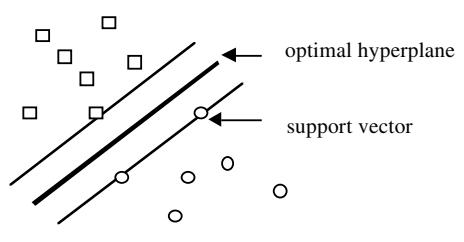
In two-class data, separability by a hyperplane does not often occur. However, let us increase the dimensionality by adding as additional predictor variables all quadratic monomials in the original predictor variables; that is, all terms of the form \(x_{m1}x_{m2}\). A hyperplane in the original variables plus quadratic monomials in the original variables is a more complex creature. The possibility of separation is greater. If no separation occurs, add cubic monomials as input features. If there are originally 30 predictor variables, then there are about 40,000 features if monomials up to the fourth degree are added.
The higher the dimensionality of the set of features, the more likely it is that separation occurs. In the ZIP Code data set, separation occurs with fourth degree monomials added. The test set error is 4.1%. Using a large subset of the NIST data base as a training set, separation also occurred after adding up to fourth degree monomials and gave a test set error rate of 1.1%.
Separation can always be had by raising the dimensionality high enough. But if the separating hyperplane becomes too complex, the generalization error becomes large. An elegant theorem (Vapnik, 1995) gives this bound for the expected generalization error:
\[ \text{Ex-GE} \leq \text{Ex}(\text{number of support vectors}) / (N - 1) \]
where \(N\) is the sample size and the expectation is over all training sets of size \(N\) drawn from the same underlying distribution as the original training set.
The number of support vectors increases with the dimensionality of the feature space. If this number becomes too large, the separating hyperplane will not give low generalization error. If separation cannot be realized with a relatively small number of support vectors, there is another version of support vector machines that defines optimality by adding a penalty term for the vectors on the wrong side of the hyperplane.
Some ingenious algorithms make finding the optimal separating hyperplane computationally feasible. These devices reduce the search to a solution of a quadratic programming problem with linear inequality constraints that are of the order of the number N of cases, independent of the dimension of the feature space. Methods tailored to this particular problem produce speed-ups of an order of magnitude over standard methods for solving quadratic programming problems.
Support vector machines can also be used to provide accurate predictions in other areas (e.g., regression). It is an exciting idea that gives excellent performance and is beginning to supplant the use of neural nets. A readable introduction is in Cristianini and Shawe-Taylor (2000).
11. INFORMATION FROM A BLACK BOX
The dilemma posed in the last section is that the models that best emulate nature in terms of predictive accuracy are also the most complex and inscrutable. But this dilemma can be resolved by realizing the wrong question is being asked. Nature forms the outputs \(\mathbf{y}\) from the inputs \(\mathbf{x}\) by means of a black box with complex and unknown interior.
Current accurate prediction methods are also complex black boxes.
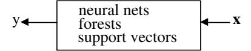
So we are facing two black boxes, where ours seems only slightly less inscrutable than nature’s. In data generated by medical experiments, ensembles of predictors can give cross-validated error rates significantly lower than logistic regression. My biostatistician friends tell me, “Doctors can interpret logistic regression.” There is no way they can interpret a black box containing fifty trees hooked together. In a choice between accuracy and interpretability, they’ll go for interpretability.
Framing the question as the choice between accuracy and interpretability is an incorrect interpretation of what the goal of a statistical analysis is. The point of a model is to get useful information about the relation between the response and predictor variables. Interpretability is a way of getting information. But a model does not have to be simple to provide reliable information about the relation between predictor and response variables; neither does it have to be a data model.
- The goal is not interpretability, but accurate information.
The following three examples illustrate this point. The first shows that random forests applied to a medical data set can give more reliable information about covariate strengths than logistic regression. The second shows that it can give interesting information that could not be revealed bya logistic regression. The third is an application to a microarraydata where it is difficult to conceive of a data model that would uncover similar information.
11.1 Example I: Variable Importance in a Survival Data Set
The data set contains survival or nonsurvival of 155 hepatitis patients with 19 covariates. It is available at ftp.ics.uci.edu/pub/MachineLearning-Databases and was contributed by Gail Gong. The description is in a file called hepatitis.names. The data set has been previously analyzed by Diaconis and Efron (1983), and Cestnik, Konenenko and Bratko (1987). The lowest reported error rate to date, 17%, is in the latter paper.
Diaconis and Efron refer to work by Peter Gregory of the Stanford Medical School who analyzed this data and concluded that the important variables were numbers 6, 12, 14, 19 and reports an estimated 20% predictive accuracy. The variables were reduced in two stages—the first was by informal data analysis. The second refers to a more formal (unspecified) statistical procedure which I assume was logistic regression.
Efron and Diaconis drew 500 bootstrap samples from the original data set and used a similar procedure to isolate the important variables in each bootstrapped data set. The authors comment, “Of the four variables originally selected not one was selected in more than 60 percent of the samples. Hence the variables identified in the original analysis cannot be taken too seriously.” We will come back to this conclusion later.
Logistic Regression
The predictive error rate for logistic regression on the hepatitis data set is 17.4%. This was evaluated by doing 100 runs, each time leaving out a randomly selected 10% of the data as a test set, and then averaging over the test set errors.
Usually, the initial evaluation of which variables are important is based on examining the absolute values of the coefficients of the variables in the logistic regression divided by their standard deviations. Figure 1 is a plot of these values.
The conclusion from looking at the standardized coefficients is that variables 7 and 11 are the most important covariates. When logistic regression is run using only these two variables, the cross-validated error rate rises to 22.9%. Another way to find important variables is to run a best subsets search which, for any value k, finds the subset of k variables having lowest deviance.
This procedure raises the problems of instability and multiplicity of models (see Section 7.1). There are about 4,000 subsets containing four variables. Of these, there are almost certainly a substantial number that have deviance close to the minimum and give different pictures of what the underlying mechanism is.
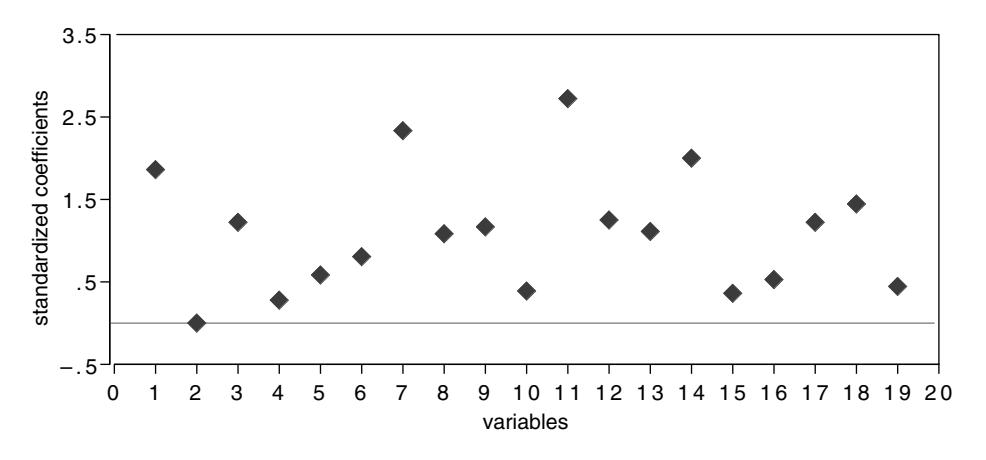
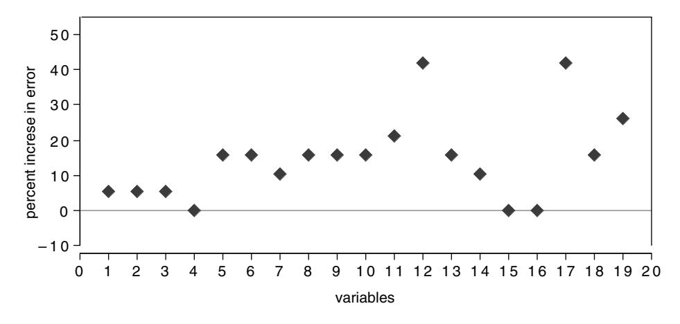
Random Forests
The random forests predictive error rate, evaluated by averaging errors over 100 runs, each time leaving out 10% of the data as a test set, is 12.3% almost a 30% reduction from the logistic regression error.
Random forests consists of a large number of randomly constructed trees, each voting for a class. Similar to bagging (Breiman, 1996), a bootstrap sample of the training set is used to construct each tree. A random selection of the input variables is searched to find the best split for each node.
To measure the importance of the mth variable, the values of the mth variable are randomly permuted in all of the cases left out in the current bootstrap sample. Then these cases are run down the current tree and their classification noted. At the end of a run consisting of growing many trees, the percent increase in misclassification rate due to noising up each variable is computed. This is the measure of variable importance that is shown in Figure 1.
Random forests singles out two variables, the 12th and the 17th, as being important. As a verification both variables were run in random forests, individually and together. The test set error rates over 100 replications were 14.3% each. Running both together did no better. We conclude that virtually all of the predictive capability is provided by a single variable, either 12 or 17.
To explore the interaction between 12 and 17 a bit further, at the end of a random forest run using all variables, the output includes the estimated value of the probability of each class vs. the case number. This information is used to get plots of the variable values (normalized to mean zero and standard deviation one) vs. the probability of death. The variable values are smoothed using a weighted linear regression smoother. The results are in Figure 3 for variables 12 and 17.
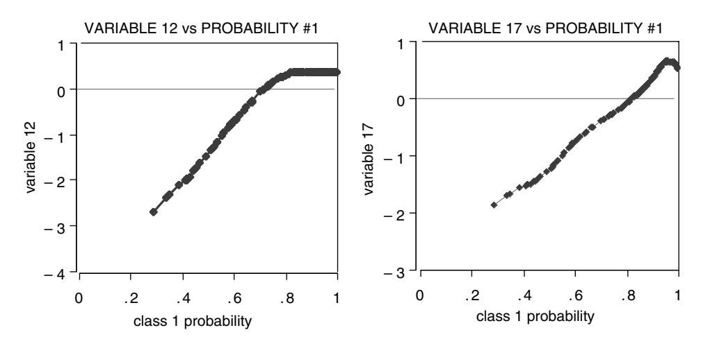
The graphs of the variable values vs. class death probability are almost linear and similar. The two variables turn out to be highly correlated. Thinking that this might have affected the logistic regression results, it was run again with one or the other of these two variables deleted. There was little change.
Out of curiosity, I evaluated variable importance in logistic regression in the same way that I did in random forests, by permuting variable values in the 10% test set and computing how much that increased the test set error. Not much help variables 12 and 17 were not among the 3 variables ranked as most important. In partial verification of the importance of 12 and 17, I tried them separately as single variables in logistic regression. Variable 12 gave a 15.7% error rate, variable 17 came in at 19.3%.
To go back to the original Diaconis–Efron analysis, the problem is clear. Variables 12 and 17 are surrogates for each other. If one of them appears important in a model built on a bootstrap sample, the other does not. So each one’s frequency of occurrence is automatically less than 50%. The paper lists the variables selected in ten of the samples. Either 12 or 17 appear in seven of the ten.
11.2 Example II: Clustering in Medical Data
The Bupa liver data set is a two-class biomedical data set also available at ftp.ics.uci.edu/pub/MachineLearningDatabases. The covariates are:
- mcv mean corpuscular volume
- alkphos alkaline phosphotase
- sgpt alamine aminotransferase
- sgot aspartate aminotransferase
- gammagt gamma-glutamyl transpeptidase
- drinks half-pint equivalents of alcoholic beverage drunk per day
The first five attributes are the results of blood tests thought to be related to liver functioning. The 345 patients are classified into two classes by the severity of their liver malfunctioning. Class two is severe malfunctioning. In a random forests run, the misclassification error rate is 28%. The variable importance given by random forests is in Figure 4.
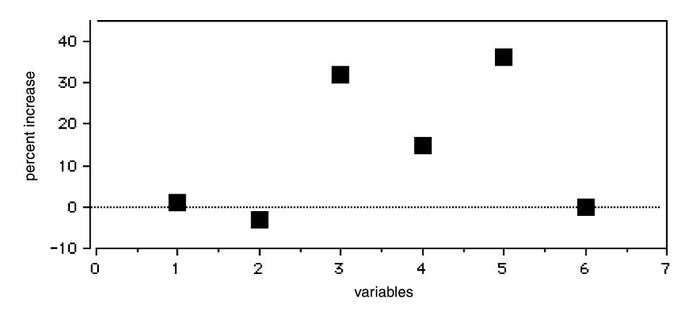
Blood tests 3 and 5 are the most important, followed by test 4. Random forests also outputs an intrinsic similarity measure which can be used to cluster. When this was applied, two clusters were discovered in class two. The average of each variable is computed and plotted in each of these clusters in Figure 5.
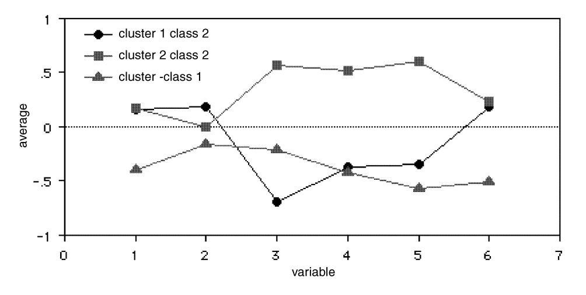
An interesting facet emerges. The class two subjects consist of two distinct groups: those that have high scores on blood tests 3, 4, and 5 and those that have low scores on those tests.
11.3 Example III: Microarray Data
Random forests was run on a microarray lymphoma data set with three classes, sample size of 81 and 4,682 variables (genes) without any variable selection [for more information about this data set, see Dudoit, Fridlyand and Speed, (2000)]. The error rate was low. What was also interesting from a scientific viewpoint was an estimate of the importance of each of the 4,682 gene expressions.
The graph in Figure 6 was produced by a run of random forests. This result is consistent with assessments of variable importance made using other algorithmic methods, but appears to have sharper detail.
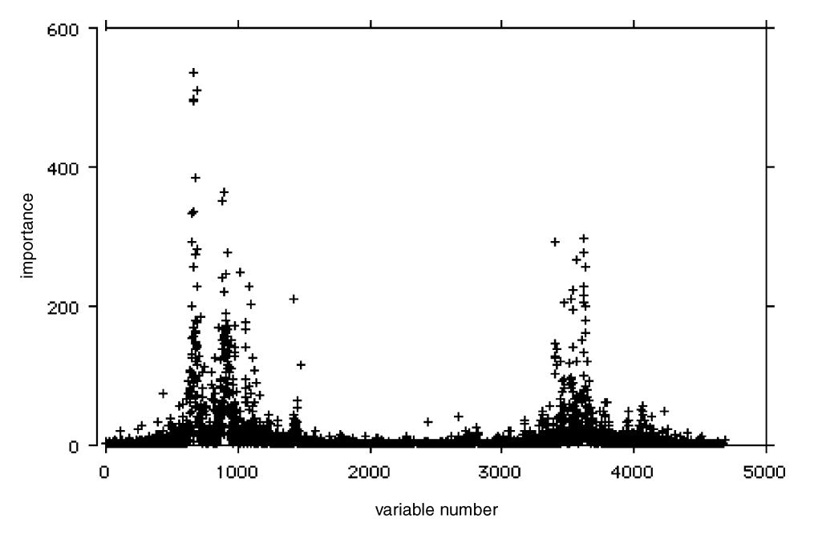
11.4 Remarks about the Examples
The examples show that much information is available from an algorithmic model. Friedman (1999) derives similar variable information from a different way of constructing a forest. The similarity is that they are both built as ways to give low predictive error.
There are 32 deaths and 123 survivors in the hepatitis data set. Calling everyone a survivor gives a baseline error rate of 20.6%. Logistic regression lowers this to 17.4%. It is not extracting much useful information from the data, which may explain its inability to find the important variables. Its weakness might have been unknown and the variable importances accepted at face value if its predictive accuracy was not evaluated.
Random forests is also capable of discovering important aspects of the data that standard data models cannot uncover. The potentially interesting clustering of class two patients in Example II is an illustration. The standard procedure when fitting data models such as logistic regression is to delete variables; to quote from Diaconis and Efron (1983) again, “statistical experience suggests that it is unwise to fit a model that depends on 19 variables with only 155 data points available.” Newer methods in machine learning thrive on variables—the more the better. For instance, random forests does not overfit. It gives excellent accuracy on the lymphoma data set of Example III which has over 4,600 variables, with no variable deletion and is capable of extracting variable importance information from the data.
These examples illustrate the following points:
- Higher predictive accuracy is associated with more reliable information about the underlying data mechanism. Weak predictive accuracy can lead to questionable conclusions.
- Algorithmic models can give better predictive accuracy than data models, and provide better information about the underlying mechanism.
12. FINAL REMARKS
The goals in statistics are to use data to predict and to get information about the underlying data mechanism. Nowhere is it written on a stone tablet what kind of model should be used to solve problems involving data. To make my position clear, I am not against data models per se. In some situations they are the most appropriate way to solve the problem. But the emphasis needs to be on the problem and on the data.
Unfortunately, our field has a vested interest in data models, come hell or high water. For instance, see Dempster’s (1998) paper on modeling. His position on the 1990 Census adjustment controversy is particularly interesting. He admits that he doesn’t know much about the data or the details, but argues that the problem can be solved by a strong dose of modeling. That more modeling can make error ridden data accurate seems highly unlikely to me.
Terrabytes of data are pouring into computers from many sources, both scientific, and commercial, and there is a need to analyze and understand the data. For instance, data is being generated at an awesome rate by telescopes and radio telescopes scanning the skies. Images containing millions of stellar objects are stored on tape or disk. Astronomers need automated ways to scan their data to find certain types of stellar objects or novel objects. This is a fascinating enterprise, and I doubt if data models are applicable. Yet I would enter this in my ledger as a statistical problem.
The analysis of genetic data is one of the most challenging and interesting statistical problems around. Microarray data, like that analyzed in Section 11.3 can lead to significant advances in understanding genetic effects. But the analysis of variable importance in Section 11.3 would be difficult to do accurately using a stochastic data model.
Problems such as stellar recognition or analysis of gene expression data could be high adventure for statisticians. But it requires that they focus on solving the problem instead of asking what data model they can create. The best solution could be an algorithmic model, or maybe a data model, or maybe a combination. But the trick to being a scientist is to be open to using a wide variety of tools.
The roots of statistics, as in science, lie in working with data and checking theory against data. I hope in this century our field will return to its roots. There are signs that this hope is not illusory. Over the last ten years, there has been a noticeable move toward statistical work on real world problems and reaching out by statisticians toward collaborative work with other disciplines. I believe this trend will continue and, in fact, has to continue if we are to survive as an energetic and creative field.
GLOSSARY
Since some of the terms used in this paper may not be familiar to all statisticians, I append some definitions.
Infinite test set error. Assume a loss function \(L(\mathbf{y}, \hat{\mathbf{y}})\) that is a measure of the error when \(\mathbf{y}\) is the true response and \(\hat{\mathbf{y}}\) the predicted response. In classification, the usual loss is 1 if \(\mathbf{y} = \hat{\mathbf{y}}\) and zero if \(\mathbf{y} = \hat{\mathbf{y}}\). In regression, the usual loss is \(\left(\mathbf{y} - \hat{\mathbf{y}}\right)^2\). Given a set of data (training set) consisting of \(\mathbf{y}_n, \mathbf{x}_n\) for \(n = 1, 2, \ldots, N\), use it to construct a predictor function \(\phi(\mathbf{x})\) of \(\mathbf{y}\). Assume that the training set is i.i.d drawn from the distribution of the random vector \(\mathbf{Y}, \mathbf{X}\). The infinite test set error is \(E[L(\mathbf{Y}, \phi(\mathbf{X}))]\). This is called the generalization error in machine learning.
The generalization error is estimated either by setting aside a part of the data as a test set or by cross-validation.
Predictive accuracy. This refers to the size of the estimated generalization error. Good predictive accuracy means low estimated error.
Trees and nodes. This terminology refers to decision trees as described in the Breiman et al book (1984).
Dropping an \(\mathbf{x}\) down a tree. When a vector of predictor variables is “dropped” down a tree, at each intermediate node it has instructions whether to go left or right depending on the coordinates of \(\mathbf{x}\). It stops at a terminal node and is assigned the prediction given by that node.
Bagging. An acronym for “bootstrap aggregating.” Start with an algorithm such that given any training set, the algorithm produces a prediction function \(\phi(\mathbf{x})\). The algorithm can be a decision tree construction, logistic regression with variable deletion, etc. Take a bootstrap sample from the training set and use this bootstrap training set to construct the predictor \(\phi_1(\mathbf{x})\). Take another bootstrap sample and using this second training set construct the predictor \(\phi_2(\mathbf{x})\). Continue this way for \(K\) steps. In regression, average all of the \(\{\phi_k(\mathbf{x})\}\) to get the bagged predictor at \(\mathbf{x}\). In classification, that class which has the plurality vote of the \(\{\phi_k(\mathbf{x})\}\) is the bagged predictor. Bagging has been shown effective in variance reduction (Breiman, 1996b).
Boosting. This is a more complex way of forming an ensemble of predictors in classification than bagging (Freund and Schapire, 1996). It uses no randomization but proceeds by altering the weights on the training set. Its performance in terms of low prediction error is excellent (for details see Breiman, 1998).
ACKNOWLEDGMENTS
Many of my ideas about data modeling were formed in three decades of conversations with my old friend and collaborator, Jerome Friedman. Conversations with Richard Olshen about the Cox model and its use in biostatistics helped me to understand the background. I am also indebted to William Meisel, who headed some of the prediction projects I consulted on and helped me make the transition from probability theory to algorithms, and to Charles Stone for illuminating conversations about the nature of statistics and science. I’m grateful also for the comments of the editor, Leon Gleser, which prompted a major rewrite of the first draft of this manuscript and resulted in a different and better paper.
REFERENCES
- Amit, Y. and Geman, D. (1997). Shape quantization and recognition with randomized trees. Neural Computation 9 1545– 1588.
- Arena, C., Sussman, N., Chiang, K., Mazumdar, S., Macina, O. and Li, W. (2000). Bagging Structure-Activity Relationships: A simulation study for assessing misclassification rates. Presented at the Second Indo-U.S. Workshop on Mathematical Chemistry, Duluth, MI. (Available at NSussman@server.ceoh.pitt.edu).
- Bickel, P., Ritov, Y. and Stoker, T. (2001). Tailor-made tests for goodness of fit for semiparametric hypotheses. Unpublished manuscript.
- Breiman, L. (1996a). The heuristics of instability in model selection. Ann. Statist. 24 2350–2381.
- Breiman, L. (1996b). Bagging predictors. Machine Learning J. 26 123–140.
- Breiman, L. (1998). Arcing classifiers. Discussion paper, Ann. Statist. 26 801–824.
- Breiman. L. (2000). Some infinity theory for tree ensembles. (Available at www.stat.berkeley.edu/technical reports).
- Breiman, L. (2001). Random forests. Machine Learning J. 45 5– 32.
- Breiman, L. and Friedman, J. (1985). Estimating optimal transformations in multiple regression and correlation. J. Amer. Statist. Assoc. 80 580–619.
- Breiman, L., Friedman, J., Olshen, R. and Stone, C. (1984). Classification and Regression Trees. Wadsworth, Belmont, CA.
- Cristianini, N. and Shawe-Taylor, J. (2000). An Introduction to Support Vector Machines. Cambridge Univ. Press.
- Daniel, C. and Wood, F. (1971). Fitting equations to data. Wiley, New York.
- Dempster, A. (1998). Logicist statistic 1. Models and Modeling. Statist. Sci. 13 3 248–276.
- Diaconis, P. and Efron, B. (1983). Computer intensive methods in statistics. Scientific American 248 116–131.
- Domingos, P. (1998). Occam’s two razors: the sharp and the blunt. In Proceedings of the Fourth International Conference on Knowledge Discovery and Data Mining (R. Agrawal and P. Stolorz, eds.) 37–43. AAAI Press, Menlo Park, CA.
- Domingos, P. (1999). The role of Occam’s razor in knowledge discovery. Data Mining and Knowledge Discovery 3 409–425.
- Dudoit, S., Fridlyand, J. and Speed, T. (2000). Comparison of discrimination methods for the classification of tumors. (Available at www.stat.berkeley.edu/technical reports).
- Freedman, D. (1987). As others see us: a case study in path analysis (with discussion). J. Ed. Statist. 12 101–223.
- Freedman, D. (1991). Statistical models and shoe leather. Sociological Methodology 1991 (with discussion) 291–358.
- Freedman, D. (1991). Some issues in the foundations of statistics. Foundations of Science 1 19–83.
- Freedman, D. (1994). From association to causation via regression. Adv. in Appl. Math. 18 59–110.
- Freund, Y. and Schapire, R. (1996). Experiments with a new boosting algorithm. In Machine Learning: Proceedings of the Thirteenth International Conference 148–156. Morgan Kaufmann, San Francisco.
- Friedman, J. (1999). Greedy predictive approximation: a gradient boosting machine. Technical report, Dept. Statistics Stanford Univ.
- Friedman, J., Hastie, T. and Tibshirani, R. (2000). Additive logistic regression: a statistical view of boosting. Ann. Statist. 28 337–407.
- Gifi, A. (1990). Nonlinear Multivariate Analysis. Wiley, New York.
- Ho, T. K. (1998). The random subspace method for constructing decision forests. IEEE Trans. Pattern Analysis and Machine Intelligence 20 832–844.
- Landswher, J., Preibon, D. and Shoemaker, A. (1984). Graphical methods for assessing logistic regression models (with discussion). J. Amer. Statist. Assoc. 79 61–83.
- McCullagh, P. and Nelder, J. (1989). Generalized Linear Models. Chapman and Hall, London.
- Meisel, W. (1972). Computer-Oriented Approaches to Pattern Recognition. Academic Press, New York.
- Michie, D., Spiegelhalter, D. and Taylor, C. (1994). Machine Learning, Neural and Statistical Classification. Ellis Horwood, New York.
- Mosteller, F. and Tukey, J. (1977). Data Analysis and Regression. Addison-Wesley, Redding, MA.
- Mountain, D. and Hsiao, C. (1989). A combined structural and flexible functional approach for model energy substitution. J. Amer. Statist. Assoc. 84 76–87.
- Stone, M. (1974). Cross-validatory choice and assessment of statistical predictions. J. Roy. Statist. Soc. B 36 111–147.
- Vapnik, V. (1995). The Nature of Statistical Learning Theory. Springer, New York.
- Vapnik, V (1998). Statistical Learning Theory. Wiley, New York.
- Wahba, G. (1990). Spline Models for Observational Data. SIAM, Philadelphia.
- Zhang, H. and Singer, B. (1999). Recursive Partitioning in the Health Sciences. Springer, New York.
Comment
D. R. Cox
D. R. Cox is an Honorary Fellow, Nuffield College, Oxford OX1 1NF, United Kingdom, and associate member, Department of Statistics, University of Oxford (e-mail: david.cox@nuffield.oxford.ac.uk).
Professor Breiman’s interesting paper gives both a clear statement of the broad approach underlying some of his influential and widely admired contributions and outlines some striking applications and developments. He has combined this with a critique of what, for want of a better term, I will call mainstream statistical thinking, based in part on a caricature. Like all good caricatures, it contains enough truth and exposes enough weaknesses to be thought-provoking.
There is not enough space to comment on all the many points explicitly or implicitly raised in the paper. There follow some remarks about a few main issues.
One of the attractions of our subject is the astonishingly wide range of applications as judged not only in terms of substantive field but also in terms of objectives, quality and quantity of data and so on. Thus any unqualified statement that “in applications” has to be treated sceptically. One of our failings has, I believe, been, in a wish to stress generality, not to set out more clearly the distinctions between different kinds of application and the consequences for the strategy of statistical analysis. Of course we have distinctions between decision-making and inference, between tests and estimation, and between estimation and prediction and these are useful but, I think, are, except perhaps the first, too phrased in terms of the technology rather than the spirit of statistical analysis. I entirely agree with Professor Breiman that it would be an impoverished and extremely unhistorical view of the subject to exclude the kind of work he describes simply because it has no explicit probabilistic base.
Professor Breiman takes data as his starting point. I would prefer to start with an issue, a question or a scientific hypothesis, although I would be surprised if this were a real source of disagreement. These issues may evolve, or even change radically, as analysis proceeds. Data looking for a question are not unknown and raise puzzles but are, I believe, atypical in most contexts. Next, even if we ignore design aspects and start with data, key points concern the precise meaning of the data, the possible biases arising from the method of ascertainment, the possible presence of major distorting measurement errors and the nature of processes underlying missing and incomplete data and data that evolve in time in a way involving complex interdependencies. For some of these, at least, it is hard to see how to proceed without some notion of probabilistic modeling.
Next Professor Breiman emphasizes prediction as the objective, success at prediction being the criterion of success, as contrasted with issues of interpretation or understanding. Prediction is indeed important from several perspectives. The success of a theory is best judged from its ability to predict in new contexts, although one cannot dismiss as totally useless theories such as the rational action theory (RAT), in political science, which, as I understand it, gives excellent explanations of the past but which has failed to predict the real political world. In a clinical trial context it can be argued that an objective is to predict the consequences of treatment allocation to future patients, and so on.
If the prediction is localized to situations directly similar to those applying to the data there is then an interesting and challenging dilemma. Is it preferable to proceed with a directly empirical black-box approach, as favored by Professor Breiman, or is it better to try to take account of some underlying explanatory process? The answer must depend on the context but I certainly accept, although it goes somewhat against the grain to do so, that there are situations where a directly empirical approach is better. Short term economic forecasting and real-time flood forecasting are probably further exemplars. Key issues are then the stability of the predictor as practical prediction proceeds, the need from time to time for recalibration and so on.
However, much prediction is not like this. Often the prediction is under quite different conditions from the data; what is the likely progress of the incidence of the epidemic of v-CJD in the United Kingdom, what would be the effect on annual incidence of cancer in the United States of reducing by 10% the medical use of X-rays, etc.? That is, it may be desired to predict the consequences of something only indirectly addressed by the data available for analysis. As we move toward such more ambitious tasks, prediction, always hazardous, without some understanding of underlying process and linking with other sources of information, becomes more and more tentative. Formulation of the goals of analysis solely in terms of direct prediction over the data set seems then increasingly unhelpful.
This is quite apart from matters where the direct objective is understanding of and tests of subject matter hypotheses about underlying process, the nature of pathways of dependence and so on.
What is the central strategy of mainstream statistical analysis? This can most certainly not be discerned from the pages of Bernoulli, The Annals of Statistics or the Scandinavian Journal of Statistics nor from Biometrika and the Journal of Royal Statistical Society, Series B or even from the application pages of Journal of the American Statistical Association or Applied Statistics, estimable though all these journals are. Of course as we move along the list, there is an increase from zero to 100% in the papers containing analyses of “real” data. But the papers do so nearly always to illustrate technique rather than to explain the process of analysis and interpretation as such. This is entirely legitimate, but is completely different from live analysis of current data to obtain subject-matter conclusions or to help solve specific practical issues. Put differently, if an important conclusion is reached involving statistical analysis it will be reported in a subject-matter journal or in a written or verbal report to colleagues, government or business. When that happens, statistical details are typically and correctly not stressed. Thus the real procedures of statistical analysis can be judged only by looking in detail at specific cases, and access to these is not always easy. Failure to discuss enough the principles involved is a major criticism of the current state of theory.
I think tentatively that the following quite commonly applies. Formal models are useful and often almost, if not quite, essential for incisive thinking. Descriptively appealing and transparent methods with a firm model base are the ideal. Notions of significance tests, confidence intervals, posterior intervals and all the formal apparatus of inference are valuable tools to be used as guides, but not in a mechanical way; they indicate the uncertainty that would apply under somewhat idealized, maybe very idealized, conditions and as such are often lower bounds to real uncertainty. Analyses and model development are at least partly exploratory. Automatic methods of model selection (and of variable selection in regression-like problems) are to be shunned or, if use is absolutely unavoidable, are to be examined carefully for their effect on the final conclusions. Unfocused tests of model adequacy are rarely helpful.
By contrast, Professor Breiman equates mainstream applied statistics to a relatively mechanical process involving somehow or other choosing a model, often a default model of standard form, and applying standard methods of analysis and goodness-of-fit procedures. Thus for survival data choose a priori the proportional hazards model. (Note, incidentally, that in the paper, often quoted but probably rarely read, that introduced this approach there was a comparison of several of the many different models that might be suitable for this kind of data.) It is true that many of the analyses done by nonstatisticians or by statisticians under severe time constraints are more or less like those Professor Breiman describes. The issue then is not whether they could ideally be improved, but whether they capture enough of the essence of the information in the data, together with some reasonable indication of precision as a guard against under or overinterpretation. Would more refined analysis, possibly with better predictive power and better fit, produce subject-matter gains? There can be no general answer to this, but one suspects that quite often the limitations of conclusions lie more in weakness of data quality and study design than in ineffective analysis.
There are two broad lines of development active at the moment arising out of mainstream statistical ideas. The first is the invention of models strongly tied to subject-matter considerations, representing underlying dependencies, and their analysis, perhaps by Markov chain Monte Carlo methods. In fields where subject-matter considerations are largely qualitative, we see a development based on Markov graphs and their generalizations. These methods in effect assume, subject in principle to empirical test, more and more about the phenomena under study. By contrast, there is an emphasis on assuming less and less via, for example, kernel estimates of regression functions, generalized additive models and so on. There is a need to be clearer about the circumstances favoring these two broad approaches, synthesizing them where possible.
My own interest tends to be in the former style of work. From this perspective Cox and Wermuth (1996, page 15) listed a number of requirements of a statistical model. These are to establish a link with background knowledge and to set up a connection with previous work, to give some pointer toward a generating process, to have primary parameters with individual clear subject-matter interpretations, to specify haphazard aspects well enough to lead to meaningful assessment of precision and, finally, that the fit should be adequate. From this perspective, fit, which is broadly related to predictive success, is not the primary basis for model choice and formal methods of model choice that take no account of the broader objectives are suspect in the present context. In a sense these are efforts to establish data descriptions that are potentially causal, recognizing that causality, in the sense that a natural scientist would use the term, can rarely be established from one type of study and is at best somewhat tentative.
Professor Breiman takes a rather defeatist attitude toward attempts to formulate underlying processes; is this not to reject the base of much scientific progress? The interesting illustrations given by Beveridge (1952), where hypothesized processes in various biological contexts led to important progress, even though the hypotheses turned out in the end to be quite false, illustrate the subtlety of the matter. Especially in the social sciences, representations of underlying process have to be viewed with particular caution, but this does not make them fruitless.
The absolutely crucial issue in serious mainstream statistics is the choice of a model that will translate key subject-matter questions into a form for analysis and interpretation. If a simple standard model is adequate to answer the subject matter question, this is fine: there are severe hidden penalties for overelaboration. The statistical literature, however, concentrates on how to do
Brad Efron
Brad Efron is Professor, Department of Statistics, Sequoia Hall, 390 Serra Mall, Stanford University, Stanford, California 94305–4065 (e-mail: brad@stat.stanford.edu).
At first glance Leo Breiman’s stimulating paper looks like an argument against parsimony and scientific insight, and in favor of black boxes with lots of knobs to twiddle. At second glance it still looks that way, but the paper is stimulating, and Leo has some important points to hammer home. At the risk of distortion I will try to restate one of those points, the most interesting one in my opinion, using less confrontational and more historical language.
From the point of view of statistical development the twentieth century might be labeled “100 years of unbiasedness.” Following Fisher’s lead, most of our current statistical theory and practice revolves around unbiased or nearly unbiased estimates (particularly MLEs), and tests based on such estimates. The power of this theory has made statistics the the analysis, an important and indeed fascinating question, but a secondary step. Better a rough answer to the right question than an exact answer to the wrong question, an aphorism, due perhaps to Lord Kelvin, that I heard as an undergraduate in applied mathematics.
I have stayed away from the detail of the paper but will comment on just one point, the interesting theorem of Vapnik about complete separation. This confirms folklore experience with empirical logistic regression that, with a largish number of explanatory variables, complete separation is quite likely to occur. It is interesting that in mainstream thinking this is, I think, regarded as insecure in that complete separation is thought to be a priori unlikely and the estimated separating plane unstable. Presumably bootstrap and cross-validation ideas may give here a quite misleading illusion of stability. Of course if the complete separator is subtle and stable Professor Breiman’s methods will emerge triumphant and ultimately it is an empirical question in each application as to what happens.
It will be clear that while I disagree with the main thrust of Professor Breiman’s paper I found it stimulating and interesting.
dominant interpretational methodology in dozens of fields, but, as we say in California these days, it is power purchased at a price: the theory requires a modestly high ratio of signal to noise, sample size to number of unknown parameters, to have much hope of success. “Good experimental design” amounts to enforcing favorable conditions for unbiased estimation and testing, so that the statistician won’t find himself or herself facing 100 data points and 50 parameters.
Now it is the twenty-first century when, as the paper reminds us, we are being asked to face problems that never heard of good experimental design. Sample sizes have swollen alarmingly while goals grow less distinct (“find interesting data structure”). New algorithms have arisen to deal with new problems, a healthy sign it seems to me even if the innovators aren’t all professional statisticians. There are enough physicists to handle the physics case load, but there are fewer statisticians and more statistics problems, and we need all the help we can get. An attractive feature of Leo’s paper is his openness to new ideas whatever their source.
The new algorithms often appear in the form of black boxes with enormous numbers of adjustable parameters (“knobs to twiddle”), sometimes more knobs than data points. These algorithms can be quite successful as Leo points out, sometimes more so than their classical counterparts. However, unless the bias-variance trade-off has been suspended to encourage new statistical industries, their success must hinge on some form of biased estimation. The bias may be introduced directly as with the “regularization” of overparameterized linear models, more subtly as in the pruning of overgrown regression trees, or surreptitiously as with support vector machines, but it has to be lurking somewhere inside the theory.
Of course the trouble with biased estimation is that we have so little theory to fall back upon. Fisher’s information bound, which tells us how well a (nearly) unbiased estimator can possibly perform, is of no help at all in dealing with heavily biased methodology. Numerical experimentation by itself, unguided by theory, is prone to faddish wandering:
Rule 1. New methods always look better than old ones. Neural nets are better than logistic regression, support vector machines are better than neural nets, etc. In fact it is very difficult to run an honest simulation comparison, and easy to inadvertently cheat by choosing favorable examples, or by not putting as much effort into optimizing the dull old standard as the exciting new challenger.
Rule 2. Complicated methods are harder to criticize than simple ones. By now it is easy to check the efficiency of a logistic regression, but it is no small matter to analyze the limitations of a support vector machine. One of the best things statisticians do, and something that doesn’t happen outside our profession, is clarify the inferential basis of a proposed new methodology, a nice recent example being Friedman, Hastie, and Tibshirani’s analysis of “boosting,” (2000). The past half-century has seen the clarification process successfully at work on nonparametrics, robustness and survival analysis. There has even been some success with biased estimation in the form of Stein shrinkage and empirical Bayes, but I believe the hardest part of this work remains to be done. Papers like Leo’s are a call for more analysis and theory, not less.
Prediction is certainly an interesting subject but Leo’s paper overstates both its role and our profession’s lack of interest in it.
- The “prediction culture,” at least around Stanford, is a lot bigger than 2%, though its constituency changes and most of us wouldn’t welcome being typecast.
- Estimation and testing are a form of prediction: “In our sample of 20 patients drug A outperformed drug B; would this still be true if we went on to test all possible patients?”
- Prediction by itself is only occasionally sufficient. The post office is happy with any method that predicts correct addresses from hand-written scrawls. Peter Gregory undertook his study for prediction purposes, but also to better understand the medical basis of hepatitis. Most statistical surveys have the identification of causal factors as their ultimate goal.
The hepatitis data was first analyzed by Gail Gong in her 1982 Ph.D. thesis, which concerned prediction problems and bootstrap methods for improving on cross-validation. (Cross-validation itself is an uncertain methodology that deserves further critical scrutiny; see, for example, Efron and Tibshirani, 1996). The Scientific American discussion is quite brief, a more thorough description appearing in Efron and Gong (1983). Variables 12 or 17 (13 or 18 in Efron and Gong’s numbering) appeared as “important” in 60% of the bootstrap simulations, which might be compared with the 59% for variable 19, the most for any single explanator.
In what sense are variable 12 or 17 or 19 “important” or “not important”? This is the kind of interesting inferential question raised by prediction methodology. Tibshirani and I made a stab at an answer in our 1998 annals paper. I believe that the current interest in statistical prediction will eventually invigorate traditional inference, not eliminate it.
A third front seems to have been opened in the long-running frequentist-Bayesian wars by the advocates of algorithmic prediction, who don’t really believe in any inferential school. Leo’s paper is at its best when presenting the successes of algorithmic modeling, which comes across as a positive development for both statistical practice and theoretical innovation. This isn’t an argument against traditional data modeling anymore than splines are an argument against polynomials. The whole point of science is to open up black boxes, understand their insides, and build better boxes for the purposes of mankind. Leo himself is a notably successful scientist, so we can hope that the present paper was written more as an advocacy device than as the confessions of a born-again black boxist.
Bruce Hoadley
Dr. Bruce Hoadley is with Fair, Isaac and Co., Inc., 120 N. Redwood Drive, San Rafael, California 94903-1996 (e-mail: BruceHoadley@ FairIsaac.com).
INTRODUCTION
Professor Breiman’s paper is an important one for statisticians to read. He and Statistical Science should be applauded for making this kind of material available to a large audience. His conclusions are consistent with how statistics is often practiced in business. This discussion will consist of an anecdotal recital of my encounters with the algorithmic modeling culture. Along the way, areas of mild disagreement with Professor Breiman are discussed. I also include a few proposals for research topics in algorithmic modeling.
CASE STUDY OF AN ALGORITHMIC MODELING CULTURE
Although I spent most of my career in management at Bell Labs and Bellcore, the last seven years have been with the research group at Fair, Isaac. This company provides all kinds of decision support solutions to several industries, and is very well known for credit scoring. Credit scoring is a great example of the problem discussed by Professor Breiman. The input variables, \(\mathbf{x}\), might come from company databases or credit bureaus. The output variable, \(y\), is some indicator of credit worthiness.
Credit scoring has been a profitable business for Fair, Isaac since the 1960s, so it is instructive to look at the Fair, Isaac analytic approach to see how it fits into the two cultures described by Professor Breiman. The Fair, Isaac approach was developed by engineers and operations research people and was driven by the needs of the clients and the quality of the data. The influences of the statistical community were mostly from the nonparametric side things like jackknife and bootstrap.
Consider an example of behavior scoring, which is used in credit card account management. For pedagogical reasons, I consider a simplified version (in the real world, things get more complicated) of monthly behavior scoring. The input variables, \(\mathbf{x}\), in this simplified version, are the monthly bills and payments over the last 12 months. So the dimension of \(\mathbf{x}\) is 24. The output variable is binary and is the indicator of no severe delinquency over the next 6 months. The goal is to estimate the function, \(f(\mathbf{x}) = \log\left(\frac{P(\mathbf{y} = 1 | \mathbf{x})}{P(\mathbf{y} = 0 | \mathbf{x})}\right)\). Professor Breiman argues that some kind of simple logistic regression from the data modeling culture is not the way to solve this problem. I agree. Let’s take a look at how the engineers at Fair, Isaac solved this problem—way back in the 1960s and 1970s.
The general form used for \(f(\mathbf{x})\) was called a segmented scorecard. The process for developing a segmented scorecard was clearly an algorithmic modeling process.
The first step was to transform \(\mathbf{x}\) into many interpretable variables called prediction characteristics. This was done in stages. The first stage was to compute several time series derived from the original two. An example is the time series of months delinquent—a nonlinear function. The second stage was to define characteristics as operators on the time series. For example, the number of times in the last six months that the customer was more than two months delinquent. This process can lead to thousands of characteristics. A subset of these characteristics passes a screen for further analysis.
The next step was to segment the population based on the screened characteristics. The segmentation was done somewhat informally. But when I looked at the process carefully, the segments turned out to be the leaves of a shallow-to-medium tree. And the tree was built sequentially using mostly binary splits based on the best splitting characteristics—defined in a reasonable way. The algorithm was manual, but similar in concept to the CART algorithm, with a different purity index.
Next, a separate function, \(f(\mathbf{x})\), was developed for each segment. The function used was called a scorecard. Each characteristic was chopped up into discrete intervals or sets called attributes. A scorecard was a linear function of the attribute indicator (dummy) variables derived from the characteristics. The coefficients of the dummy variables were called score weights.
This construction amounted to an explosion of dimensionality. They started with 24 predictors. These were transformed into hundreds of characteristics and pared down to about 100 characteristics. Each characteristic was discretized into about 10 attributes, and there were about 10 segments. This makes 100 × 10 × 10 = 10 000 features. Yes indeed, dimensionality is a blessing.
What Fair, Isaac calls a scorecard is now elsewhere called a generalized additive model (GAM) with bin smoothing. However, a simple GAM would not do. Client demand, legal considerations and robustness over time led to the concept of score engineering. For example, the score had to be monotonically decreasing in certain delinquency characteristics. Prior judgment also played a role in the design of scorecards. For some characteristics, the score weights were shrunk toward zero in order to moderate the influence of these characteristics. For other characteristics, the score weights were expanded in order to increase the influence of these characteristics. These adjustments were not done willy-nilly. They were done to overcome known weaknesses in the data.
So how did these Fair, Isaac pioneers fit these complicated GAM models back in the 1960s and 1970s? Logistic regression was not generally available. And besides, even today’s commercial GAM software will not handle complex constraints. What they did was to maximize (subject to constraints) a measure called divergence, which measures how well the score, \(S\), separates the two populations with different values of \(y\). The formal definition of divergence is \(\frac{2(E[S|y = 1] - E[S|y = 0])^2}{(V[S|y=1] + V[S|y=0])}\). This constrained fitting was done with a heuristic nonlinear programming algorithm. A linear transformation was used to convert to a log odds scale.
Characteristic selection was done by analyzing the change in divergence after adding (removing) each candidate characteristic to (from) the current best model. The analysis was done informally to achieve good performance on the test sample. There were no formal tests of fit and no tests of score weight statistical significance. What counted was performance on the test sample, which was a surrogate for the future real world.
These early Fair, Isaac engineers were ahead of their time and charter members of the algorithmic modeling culture. The score formula was linear in an exploded dimension. A complex algorithm was used to fit the model. There was no claim that the final score formula was correct, only that it worked well on the test sample. This approach grew naturally out of the demands of the business and the quality of the data. The overarching goal was to develop tools that would help clients make better decisions through data. What emerged was a very accurate and palatable algorithmic modeling solution, which belies Breiman’s statement: “The algorithmic modeling methods available in the pre-1980s decades seem primitive now.” At a recent ASA meeting, I heard talks on treed regression, which looked like segmented scorecards to me.
After a few years with Fair, Isaac, I developed a talk entitled, “Credit Scoring—A Parallel Universe of Prediction and Classification.” The theme was that Fair, Isaac developed in parallel many of the concepts used in modern algorithmic modeling.
Certain aspects of the data modeling culture crept into the Fair, Isaac approach. The use of divergence was justified by assuming that the score distributions were approximately normal. So rather than making assumptions about the distribution of the inputs, they made assumptions about the distribution of the output. This assumption of normality was supported by a central limit theorem, which said that sums of many random variables are approximately normal—even when the component random variables are dependent and multiples of dummy random variables.
Modern algorithmic classification theory has shown that excellent classifiers have one thing in common, they all have large margin. Margin, \(M\), is a random variable that measures the comfort level with which classifications are made. When the correct classification is made, the margin is positive; it is negative otherwise. Since margin is a random variable, the precise definition of large margin is tricky. It does not mean that \(E[M]\) is large. When I put my data modeling hat on, I surmised that large margin means that \(E[M]/\sqrt{V[M]}\) is large. Lo and behold, with this definition, large margin means large divergence.
Since the good old days at Fair, Isaac, there have been many improvements in the algorithmic modeling approaches. We now use genetic algorithms to screen very large structured sets of prediction characteristics. Our segmentation algorithms have been automated to yield even more predictive systems. Our palatable GAM modeling tool now handles smooth splines, as well as splines mixed with step functions, with all kinds of constraint capability. Maximizing divergence is still a favorite, but we also maximize constrained GLM likelihood functions. We also are experimenting with computationally intensive algorithms that will optimize any objective function that makes sense in the business environment. All of these improvements are squarely in the culture of algorithmic modeling.
OVERFITTING THE TEST SAMPLE
Professor Breiman emphasizes the importance of performance on the test sample. However, this can be overdone. The test sample is supposed to represent the population to be encountered in the future. But in reality, it is usually a random sample of the current population. High performance on the test sample does not guarantee high performance on future samples, things do change. There are practices that can be followed to protect against change.
One can monitor the performance of the models over time and develop new models when there has been sufficient degradation of performance. For some of Fair, Isaac’s core products, the redevelopment cycle is about 18–24 months. Fair, Isaac also does “score engineering” in an attempt to make the models more robust over time. This includes damping the influence of individual characteristics, using monotone constraints and minimizing the size of the models subject to performance constraints on the current test sample. This score engineering amounts to moving from very nonparametric (no score engineering) to more semiparametric (lots of score engineering).
SPIN-OFFS FROM THE DATA MODELING CULTURE
In Section 6 of Professor Breiman’s paper, he says that “multivariate analysis tools in statistics are frozen at discriminant analysis and logistic regression in classification” This is not necessarily all that bad. These tools can carry you very far as long as you ignore all of the textbook advice on how to use them. To illustrate, I use the saga of the Fat Scorecard.
Early in my research days at Fair, Isaac, I was searching for an improvement over segmented scorecards. The idea was to develop first a very good global scorecard and then to develop small adjustments for a number of overlapping segments. To develop the global scorecard, I decided to use logistic regression applied to the attribute dummy variables. There were 36 characteristics available for fitting. A typical scorecard has about 15 characteristics. My variable selection was structured so that an entire characteristic was either in or out of the model. What I discovered surprised me. All models fit with anywhere from 27 to 36 characteristics had the same performance on the test sample. This is what Professor Breiman calls “Rashomon and the multiplicity of good models.” To keep the model as small as possible, I chose the one with 27 characteristics. This model had 162 score weights (logistic regression coefficients), whose P values ranged from 0.0001 to 0.984, with only one less than 0.05; i.e., statistically significant. The confidence intervals for the 162 score weights were useless. To get this great scorecard, I had to ignore the conventional wisdom on how to use logistic regression.
So far, all I had was the scorecard GAM. So clearly I was missing all of those interactions that just had to be in the model. To model the interactions, I tried developing small adjustments on various overlapping segments. No matter how hard I tried, nothing improved the test sample performance over the global scorecard. I started calling it the Fat Scorecard.
Earlier, on this same data set, another Fair, Isaac researcher had developed a neural network with 2,000 connection weights. The Fat Scorecard slightly outperformed the neural network on the test sample. I cannot claim that this would work for every data set. But for this data set, I had developed an excellent algorithmic model with a simple data modeling tool.
Why did the simple additive model work so well? One idea is that some of the characteristics in the model are acting as surrogates for certain interaction terms that are not explicitly in the model. Another reason is that the scorecard is really a sophisticated neural net. The inputs are the original inputs. Associated with each characteristic is a hidden node. The summation functions coming into the hidden nodes are the transformations defining the characteristics. The transfer functions of the hidden nodes are the step functions (compiled from the score weights)—all derived from the data. The final output is a linear function of the outputs of the hidden nodes. The result is highly nonlinear and interactive, when looked at as a function of the original inputs.
The Fat Scorecard study had an ingredient that is rare. We not only had the traditional test sample, but had three other test samples, taken one, two, and three years later. In this case, the Fat Scorecard outperformed the more traditional thinner scorecard for all four test samples. So the feared overfitting to the traditional test sample never materialized. To get a better handle on this you need an understanding of how the relationships between variables evolve over time.
I recently encountered another connection between algorithmic modeling and data modeling. In classical multivariate discriminant analysis, one assumes that the prediction variables have a multivariate normal distribution. But for a scorecard, the prediction variables are hundreds of attribute dummy variables, which are very nonnormal. However, if you apply the discriminant analysis algorithm to the attribute dummy variables, you can get a great algorithmic model, even though the assumptions of discriminant analysis are severely violated.
A SOLUTION TO THE OCCAM DILEMMA
I think that there is a solution to the Occam dilemma without resorting to goal-oriented arguments. Clients really do insist on interpretable functions, \(f(\mathbf{x})\). Segmented palatable scorecards are very interpretable by the customer and are very accurate. Professor Breiman himself gave single trees an A+ on interpretability. The shallow-to-medium tree in a segmented scorecard rates an A++. The palatable scorecards in the leaves of the trees are built from interpretable (possibly complex) characteristics. Sometimes we can’t implement them until the lawyers and regulators approve. And that requires super interpretability. Our more sophisticated products have 10 to 20 segments and up to 100 characteristics (not all in every segment). These models are very accurate and very interpretable.
I coined a phrase called the “Ping-Pong theorem.” This theorem says that if we revealed to Professor Breiman the performance of our best model and gave him our data, then he could develop an algorithmic model using random forests, which would outperform our model. But if he revealed to us the performance of his model, then we could develop a segmented scorecard, which would outperform his model. We might need more characteristics, attributes and segments, but our experience in this kind of contest is on our side.
However, all the competing models in this game of Ping-Pong would surely be algorithmic models. But some of them could be interpretable.
THE ALGORITHM TUNING DILEMMA
As far as I can tell, all approaches to algorithmic model building contain tuning parameters, either explicit or implicit. For example, we use penalized objective functions for fitting and marginal contribution thresholds for characteristic selection. With experience, analysts learn how to set these tuning parameters in order to get excellent test sample or cross-validation results. However, in industry and academia, there is sometimes a little tinkering, which involves peeking at the test sample. The result is some bias in the test sample or cross-validation results. This is the same kind of tinkering that upsets test of fit pureness. This is a challenge for the algorithmic modeling approach. How do you optimize your results and get an unbiased estimate of the generalization error?
GENERALIZING THE GENERALIZATION ERROR
In most commercial applications of algorithmic modeling, the function, \(f(\mathbf{x})\), is used to make decisions. In some academic research, classification is used as a surrogate for the decision process, and misclassification error is used as a surrogate for profit. However, I see a mismatch between the algorithms used to develop the models and the business measurement of the model’s value. For example, at Fair, Isaac, we frequently maximize divergence. But when we argue the model’s value to the clients, we don’t necessarily brag about the great divergence. We try to use measures that the client can relate to. The ROC curve is one favorite, but it may not tell the whole story. Sometimes, we develop simulations of the client’s business operation to show how the model will improve their situation. For example, in a transaction fraud control process, some measures of interest are false positive rate, speed of detection and dollars saved when 0.5% of the transactions are flagged as possible frauds. The 0.5% reflects the number of transactions that can be processed by the current fraud management staff. Perhaps what the client really wants is a score that will maximize the dollars saved in their fraud control system. The score that maximizes test set divergence or minimizes test set misclassifications does not do it. The challenge for algorithmic modeling is to find an algorithm that maximizes the generalization dollars saved, not generalization error.
We have made some progress in this area using ideas from support vector machines and boosting. By manipulating the observation weights used in standard algorithms, we can improve the test set performance on any objective of interest. But the price we pay is computational intensity.
MEASURING IMPORTANCE—IS IT REALLY POSSIBLE?
I like Professor Breiman’s idea for measuring the importance of variables in black box models. A Fair, Isaac spin on this idea would be to build accurate models for which no variable is much more important than other variables. There is always a chance that a variable and its relationships will change in the future. After that, you still want the model to work. So don’t make any variable dominant.
I think that there is still an issue with measuring importance. Consider a set of inputs and an algorithm that yields a black box, for which \(x_1\) is important. From the “Ping Pong theorem” there exists a set of input variables, excluding \(x_1\) and an algorithm that will yield an equally accurate black box. For this black box, \(x_1\) is unimportant.
IN SUMMARY
Algorithmic modeling is a very important area of statistics. It has evolved naturally in environments with lots of data and lots of decisions. But you can do it without suffering the Occam dilemma; for example, use medium trees with interpretable
Emanuel Parzen
Emanuel Parzen is Distinguished Professor, Department of Statistics, Texas A&M University, 415 C Block Building, College Station, Texas 77843 (e-mail: eparzen@stat.tamu.edu).
1. BREIMAN DESERVES OUR APPRECIATION
I strongly support the view that statisticians must face the crisis of the difficulties in their practice of regression. Breiman alerts us to systematic blunders (leading to wrong conclusions) that have been committed applying current statistical practice of data modeling. In the spirit of “statistician, avoid doing harm” I propose that the first goal of statistical ethics should be to guarantee to our clients that any mistakes in our analysis are unlike any mistakes that statisticians have made before.
The two goals in analyzing data which Leo calls prediction and information I prefer to describe as “management” and “science.” Management seeks profit, practical answers (predictions) useful for decision making in the short run. Science seeks truth, fundamental knowledge about nature which provides understanding and control in the long run. As a historical note, Student’s t-test has many scientific applications but was invented by Student as a management tool to make Guinness beer better (bitter?).
Breiman does an excellent job of presenting the case that the practice of statistical science, using only the conventional data modeling culture, needs reform. He deserves much thanks for alerting us to the algorithmic modeling culture. Breiman warns us that “if the model is a poor emulation of nature, the conclusions maybe wrong.” This situation, which I call “the right answer to the wrong question,” is called by statisticians “the error of the third kind.” Engineers at M.I.T. define “suboptimization” as “elegantly solving the wrong problem.”
GAMs in the leaves. They are very accurate and interpretable. And you can do it with data modeling tools as long as you (i) ignore most textbook advice, (ii) embrace the blessing of dimensionality, (iii) use constraints in the fitting optimizations (iv) use regularization, and (v) validate the results.
Breiman presents the potential benefits of algorithmic models (better predictive accuracy than data models, and consequently better information about the underlying mechanism and avoiding questionable conclusions which results from weak predictive accuracy) and support vector machines (which provide almost perfect separation and discrimination between two classes by increasing the dimension of the feature set). He convinces me that the methods of algorithmic modeling are important contributions to the tool kit of statisticians.
If the profession of statistics is to remain healthy, and not limit its research opportunities, statisticians must learn about the cultures in which Breiman works, but also about many other cultures of statistics.
2. HYPOTHESES TO TEST TO AVOID BLUNDERS OF STATISTICAL MODELING
Breiman deserves our appreciation for pointing out generic deviations from standard assumptions (which I call bivariate dependence and two-sample conditional clustering) for which we should routinely check. “Test null hypothesis” can be a useful algorithmic concept if we use tests that diagnose in a model-free way the directions of deviation from the null hypothesis model.
Bivariate dependence (correlation) may exist between features [independent (input) variables] in a regression causing them to be proxies for each other and our models to be unstable with different forms of regression models being equally well fitting. We need tools to routinely test the hypothesis of statistical independence of the distributions of independent (input) variables.
Two sample conditional clustering arises in the distributions of independent (input) variables to discriminate between two classes, which we call the conditional distribution of input variables X given each class. Class I may have only one mode (cluster) at low values of X while class II has two modes
(clusters) at low and high values of X. We would like to conclude that high values of X are observed only for members of class II but low values of X occur for members of both classes. The hypothesis we propose testing is equality of the pooled distribution of both samples and the conditional distribution of sample I, which is equivalent to P class IX = P class I. For successful discrimination one seeks to increase the number (dimension) of inputs (features) X to make P class IX close to 1 or 0.
3. STATISTICAL MODELING, MANY CULTURES, STATISTICAL METHODS MINING
Breiman speaks of two cultures of statistics; I believe statistics has many cultures. At specialized workshops (on maximum entropy methods or robust methods or Bayesian methods or ) a main topic of conversation is “Why don’t all statisticians think like us?”
I have my own eclectic philosophy of statistical modeling to which I would like to attract serious attention. I call it “statistical methods mining” which seeks to provide a framework to synthesize and apply the past half-century of methodological progress in computationally intensive methods for statistical modeling, including EDA (exploratory data analysis), FDA (functional data analysis), density estimation, Model DA (model selection criteria data analysis), Bayesian priors on function space, continuous parameter regression analysis and reproducing kernels, fast algorithms, Kalman filtering, complexity, information, quantile data analysis, nonparametric regression, conditional quantiles.
I believe “data mining” is a special case of “data modeling.” We should teach in our introductory courses that one meaning of statistics is “statistical data modeling done in a systematic way” by an iterated series of stages which can be abbreviated SIEVE (specify problem and general form of models, identify tentatively numbers of parameters and specialized models, estimate parameters, validate goodness-of-fit of estimated models, estimate final model nonparametrically or algorithmically). MacKay and Oldford (2000) brilliantly present the statistical method as a series of stages PPDAC (problem, plan, data, analysis, conclusions).
4. QUANTILE CULTURE, ALGORITHMIC MODELS
A culture of statistical data modeling based on quantile functions, initiated in Parzen (1979), has been my main research interest since 1976. In my discussion to Stone (1977) I outlined a novel approach to estimation of conditional quantile functions which I only recently fully implemented. I would like to extend the concept of algorithmic statistical models in two ways: (1) to mean data fitting by representations which use approximation theory and numerical analysis; (2) to use the notation of probability to describe empirical distributions of samples (data sets) which are not assumed to be generated by a random mechanism.
My quantile culture has not yet become widely applied because “you cannot give away a good idea, you have to sell it” (by integrating it in computer programs usable by applied statisticians and thus promote statistical methods mining).
A quantile function \(Q_u\), \(0 \leq u \leq 1\), is the inverse \(F^{-1}(u)\) of a distribution function \(F(\mathbf{x})\), \(-\infty < \mathbf{x} < \infty\). Its rigorous definition is \(Q_u = \inf_{\mathbf{x}} F(\mathbf{x}) \geq u\). When \(F\) is continuous with density \(f\), \(F(Q_u) = u\), \(q_u = Q(u) = 1/f(Q_u)\). We use the notation \(Q\) for a true unknown quantile function, \(\tilde{Q}\) for a raw estimator from a sample, and \(\hat{Q}\) for a smooth estimator of the true \(Q\).
Concepts defined for \(Q_u\) can be defined also for other versions of quantile functions. Quantile functions can “compress data” by a five-number summary, values of \(Q_u\) at \(u = 0.5, 0.25, 0.75, 0.1, 0.9\) (or \(0.05, 0.95\)). Measures of location and scale are \(Q_M = 0.5 - Q_{0.25} + Q_{0.75}\), \(Q_D = 2(Q_{0.75} - Q_{0.25})\). To use quantile functions to identify distributions fitting data we propose the quantile quartile function \(Q_u = Q_u - Q_M/Q_D\). Five-number summary of distribution becomes \(Q_M, Q_D, Q_{0.5}, \text{skewness}, Q_{0.1}, \text{left-tail}, Q_{0.9}, \text{right-tail}\). Elegance of \(Q_u\) is its universal values at \(u = 0.25, 0.75\). Values \(Q_u > 1\) are outliers as defined by Tukey EDA.
For the fundamental problem of comparison of two distributions \(F\) and \(G\) we define the comparison distribution \(D_u(F, G)\) and comparison density \(d_u(F, G) = D_u(F, G)\). For \(F\) and \(G\) continuous, define \(D_u(F, G) = G^{-1}(u)\), \(d_u(F, G) = g^{-1}(u)/f^{-1}(u)\) assuming \(f(\mathbf{x}) = 0\) implies \(g(\mathbf{x}) = 0\), written \(G \sim F\). For \(F\) and \(G\) discrete with probability mass functions \(p_F\) and \(p_G\) define (assuming \(G \sim F\)) \(d_u(F, G) = p_G^{-1}(u)/p_F^{-1}(u)\).
Our applications of comparison distributions often assume \(F\) to be an unconditional distribution and \(G\) a conditional distribution. To analyze bivariate data \(\mathbf{X}, \mathbf{Y}\) a fundamental tool is dependence density \(d_t(u) = d_u(F_Y, F_{Y|\mathbf{X}=\mathbf{Q}_X(t)})\). When \(\mathbf{X}\) and \(\mathbf{Y}\) are jointly continuous,
\[ d(t, u) \]
= \(f_{X,Y}(Q_X(t), Q_Y(u))/f_X(Q_X(t))f_Y(Q_Y(u)).\)
The statistical independence hypothesis \(F_X \circ F_Y = F_X \circ F_Y\) is equivalent to \(d_t(u) = 1\), all \(t, u\). A fundamental formula for estimation of conditional quantile functions is
\[ Q_{Y|X=x}(u) = Q_Y(D^{-1}(u; F_Y, F_{Y|X=x})) \]
= \(Q_Y(s), u = D(s; F_Y, F_{Y|X=x}).\)
To compare the distributions of two univariate samples, let \(\mathbf{Y}\) denote the continuous response variable and \(\mathbf{X}\) be binary \(0, 1\) denoting the population from which \(\mathbf{Y}\) is observed. The comparison density is defined (note \(F_Y\) is the pooled distribution function)
\[ d_1(u) = d(u; F_Y, F_{Y|X=1}) \]
= \(P[X = 1|Y = Q_Y(u)]/P[X = 1].\)
5. QUANTILE IDEAS FOR HIGH DIMENSIONAL DATA ANALYSIS
By high dimensional data we mean multivariate data \(\mathbf{Y}_1, \ldots, \mathbf{Y}_m\). We form approximate high dimensional comparison densities \(d_{u_1, \ldots, u_m}\) to test statistical independence of the variables and, when we have two samples, \(d_{1, \ldots, 1}\) to test equality of sample I with pooled sample. All our distributions are empirical distributions but we use notation for true distributions in our formulas. Note that
\[ \int_0^1 du_1 \ldots \int_0^1 du_m d(u_1, \ldots, u_m) d_1(u_1, \ldots, u_m) = 1. \]
A decile quantile bin \(B_{k_1, \ldots, k_m}\) is defined to be the set of observations \(\mathbf{Y}_1, \ldots, \mathbf{Y}_m\) satisfying, for \(j = 1, \ldots, m\), \(Q_{\mathbf{Y}_j}((k_j - 1)/10) < \mathbf{Y}_j \leq Q_{\mathbf{Y}_j}(k_j/10)\). Instead of deciles \(k/10\) we could use \(k/M\) for another base \(M\).
To test the hypothesis that \(\mathbf{Y}_1, \ldots, \mathbf{Y}_m\) are statistically independent we form for all \(k_j = 1, \ldots, 10\),
\[ d(k_1, \ldots, k_m) = P[\text{Bin}(k_1, \ldots, k_m)]/ \] \[ P[\text{Bin}(k_1, \ldots, k_m)| \text{independence}]. \]
To test equality of distribution of a sample from population I and the pooled sample we form
\[ d_1(k_1, \ldots, k_m) \]
= \(P[\text{Bin}(k_1, \ldots, k_m)|\) population \(I\) ]/
\(P[\text{Bin}(k_1, \ldots, k_m)|\) pooled sample]
for all \(k_1, \ldots, k_m\) such that the denominator is positive and otherwise defined arbitrarily. One can show (letting \(\mathbf{X}\) denote the population observed)
\[ d_1(k_1, \ldots, k_m) = P[\mathbf{X} = I] \text{ observation from} \] \[ \text{Bin}(k_1, \ldots, k_m) / P[\mathbf{X} = I]. \]
To test the null hypotheses in ways that detect directions of deviations from the null hypothesis our recommended first step is quantile data analysis of the values \(d_{k_1, \ldots, k_m}\) and \(d_{1, k_1, \ldots, k_m}\).
I appreciate this opportunity to bring to the attention of researchers on high dimensional data analysis the potential of quantile methods. My conclusion is that statistical science has many cultures and statisticians will be more successful when they emulate Leo Breiman and apply as many cultures as possible (which I call statistical methods mining). Additional references are on my web site at stat.tamu.edu.
Rejoinder
Leo Breiman
I thank the discussants. I’m fortunate to have comments from a group of experienced and creative statisticians—even more so in that their comments are diverse. Manny Parzen and Bruce Hoadley are more or less in agreement, Brad Efron has serious reservations and D. R. Cox is in downright disagreement.
I address Professor Cox’s comments first, since our disagreement is crucial.
D. R. COX
Professor Cox is a worthy and thoughtful adversary. We walk down part of the trail together and then sharply diverge. To begin, I quote: “Professor Breiman takes data as his starting point. I would prefer to start with an issue, a question, or a scientific hypothesis,” I agree, but would expand the starting list to include the prediction of future events. I have never worked on a project that has started with “Here is a lot of data; let’s look at it and see if we can get some ideas about how to use it.” The data has been put together and analyzed starting with an objective.
C1 Data Models Can Be Useful
Professor Cox is committed to the use of data models. I readily acknowledge that there are situations where a simple data model may be useful and appropriate; for instance, if the science of the mechanism producing the data is well enough known to determine the model apart from estimating parameters. There are also situations of great complexity posing important issues and questions in which there is not enough data to resolve the questions to the accuracy desired. Simple models can then be useful in giving qualitative understanding, suggesting future research areas and the kind of additional data that needs to be gathered.
At times, there is not enough data on which to base predictions; but policy decisions need to be made. In this case, constructing a model using whatever data exists, combined with scientific common sense and subject-matter knowledge, is a reasonable path. Professor Cox points to examples when he writes:
Often the prediction is under quite different conditions from the data; what is the likely progress of the incidence of the epidemic of v-CJD in the United Kingdom, what would be the effect on annual incidence of cancer in the United States reducing by 10% the medical use of X-rays, etc.? That is, it may be desired to predict the consequences of something only indirectly addressed by the data available for analysis prediction, always hazardous, without some understanding of the underlying process and linking with other sources of information, becomes more and more tentative.
I agree.
C2 Data Models Only
From here on we part company. Professor Cox’s discussion consists of a justification of the use of data models to the exclusion of other approaches. For instance, although he admits, ” I certainly accept, although it goes somewhat against the grain to do so, that there are situations where a directly empirical approach is better” the two examples he gives of such situations are short-term economic forecasts and real-time flood forecasts—among the less interesting of all of the many current successful algorithmic applications. In his view, the only use for algorithmic models is short-term forecasting; there are no comments on the rich information about the data and covariates available from random forests or in the many fields, such as pattern recognition, where algorithmic modeling is fundamental.
He advocates construction of stochastic data models that summarize the understanding of the phenomena under study. The methodology in the Cox and Wermuth book (1996) attempts to push understanding further by finding casual orderings in the covariate effects. The sixth chapter of this book contains illustrations of this approach on four data sets.
The first is a small data set of 68 patients with seven covariates from a pilot study at the University of Mainz to identify psychological and socioeconomic factors possibly important for glucose control in diabetes patients. This is a regression-type problem with the response variable measured by GHb (glycosylated haemoglobin). The model fitting is done by a number of linear regressions and validated by the checking of various residual plots. The only other reference to model validation is the statement, “\(R^2=0.34\), reasonably large by the standards usual for this field of study.” Predictive accuracy is not computed, either for this example or for the three other examples.
My comments on the questionable use of data models apply to this analysis. Incidentally, I tried to get one of the data sets used in the chapter to conduct an alternative analysis, but it was not possible to get it before my rejoinder was due. It would have been interesting to contrast our two approaches.
C3 Approach to Statistical Problems
Basing my critique on a small illustration in a book is not fair to Professor Cox. To be fairer, I quote his words about the nature of a statistical analysis:
Formal models are useful and often almost, if not quite, essential for incisive thinking. Descriptively appealing and transparent methods with a firm model base are the ideal. Notions of significance tests, confidence intervals, posterior intervals, and all the formal apparatus of inference are valuable tools to be used as guides, but not in a mechanical way; they indicate the uncertainty that would apply under somewhat idealized, maybe very idealized, conditions and as such are often lower bounds to real uncertainty. Analyses and model development are at least partly exploratory. Automatic methods of model selection (and of variable selection in regression like problems) are to be shunned or, if use is absolutely unavoidable, are to be examined carefully for their effect on the final conclusions. Unfocused tests of model adequacy are rarely helpful.
Given the right kind of data: relatively small sample size and a handful of covariates, I have no doubt that his experience and ingenuity in the craft of model construction would result in an illuminating model. But data characteristics are rapidly changing. In many of the most interesting current problems, the idea of starting with a formal model is not tenable.
C4 Changes in Problems
My impression from Professor Cox’s comments is that he believes every statistical problem can be best solved by constructing a data model. I believe that statisticians need to be more pragmatic. Given a statistical problem, find a good solution, whether it is a data model, an algorithmic model or (although it is somewhat against my grain), a Bayesian data model or a completely different approach.
My work on the 1990 Census Adjustment (Breiman, 1994) involved a painstaking analysis of the sources of error in the data. This was done by a long study of thousands of pages of evaluation documents. This seemed the most appropriate way of answering the question of the accuracy of the adjustment estimates.
The conclusion that the adjustment estimates were largely the result of bad data has never been effectively contested and is supported by the results of the Year 2000 Census Adjustment effort. The accuracy of the adjustment estimates was, arguably, the most important statistical issue of the last decade, and could not be resolved by any amount of statistical modeling.
A primary reason why we cannot rely on data models alone is the rapid change in the nature of statistical problems. The realm of applications of statistics has expanded more in the last twenty-five years than in any comparable period in the history of statistics.
In an astronomy and statistics workshop this year, a speaker remarked that in twenty-five years we have gone from being a small sample-size science to a very large sample-size science. Astronomical data bases now contain data on two billion objects comprising over 100 terabytes and the rate of new information is accelerating.
A recent biostatistics workshop emphasized the analysis of genetic data. An exciting breakthrough is the use of microarrays to locate regions of gene activity. Here the sample size is small, but the number of variables ranges in the thousands. The questions are which specific genes contribute to the occurrence of various types of diseases.
Questions about the areas of thinking in the brain are being studied using functional MRI. The data gathered in each run consists of a sequence of 150,000 pixel images. Gigabytes of satellite information are being used in projects to predict and understand short- and long-term environmental and weather changes.
Underlying this rapid change is the rapid evolution of the computer, a device for gathering, storing and manipulation of incredible amounts of data, together with technological advances incorporating computing, such as satellites and MRI machines.
The problems are exhilarating. The methods used in statistics for small sample sizes and a small number of variables are not applicable. John Rice, in his summary talk at the astronomy and statistics workshop said, “Statisticians have to become opportunistic.” That is, faced with a problem, they must find a reasonable solution by whatever method works. One surprising aspect of both workshops was how opportunistic statisticians faced with genetic and astronomical data had become. Algorithmic methods abounded.
C5 Mainstream Procedures and Tools
Professor Cox views my critique of the use of data models as based in part on a caricature. Regarding my references to articles in journals such as JASA, he states that they are not typical of mainstream statistical analysis, but are used to illustrate technique rather than explain the process of analysis. His concept of mainstream statistical analysis is summarized in the quote given in my Section C3. It is the kind of thoughtful and careful analysis that he prefers and is capable of.
Following this summary is the statement:
By contrast, Professor Breiman equates mainstream applied statistics to a relatively mechanical process involving somehow or other choosing a model, often a default model of standard form, and applying standard methods of analysis and goodness-of-fit procedures.
The disagreement is definitional—what is “mainstream”? In terms of numbers my definition of mainstream prevails, I guess, at a ratio of at least 100 to 1. Simply count the number of people doing their statistical analysis using canned packages, or count the number of SAS licenses.
In the academic world, we often overlook the fact that we are a small slice of all statisticians and an even smaller slice of all those doing analyses of data. There are many statisticians and nonstatisticians in diverse fields using data to reach conclusions and depending on tools supplied to them by SAS, SPSS, etc. Their conclusions are important and are sometimes published in medical or other subject-matter journals. They do not have the statistical expertise, computer skills, or time needed to construct more appropriate tools. I was faced with this problem as a consultant when confined to using the BMDP linear regression, stepwise linear regression, and discriminant analysis programs. My concept of decision trees arose when I was faced with nonstandard data that could not be treated by these standard methods.
When I rejoined the university after my consulting years, one of my hopes was to provide better general purpose tools for the analysis of data. The first step in this direction was the publication of the CART book (Breiman et al., 1984). CART and other similar decision tree methods are used in thousands of applications yearly in many fields. It has proved robust and reliable. There are others that are more recent; random forests is the latest. A preliminary version of random forests is free source with f77 code, S+ and R interfaces available at www.stat.berkeley.edu/users/breiman.
A nearly completed second version will also be put on the web site and translated into Java by the Weka group. My collaborator, Adele Cutler, and I will continue to upgrade, add new features, graphics, and a good interface.
My philosophy about the field of academic statistics is that we have a responsibility to provide the many people working in applications outside of academia with useful, reliable, and accurate analysis tools. Two excellent examples are wavelets and decision trees. More are needed.
Brad Efron
Brad seems to be a bit puzzled about how to react to my article. I’ll start with what appears to be his biggest reservation.
E1 From Simple to Complex Models
Brad is concerned about the use of complex models without simple interpretability in their structure, even though these models may be the most accurate predictors possible. But the evolution of science is from simple to complex.
The equations of general relativity are considerably more complex and difficult to understand than Newton’s equations. The quantum mechanical equations for a system of molecules are extraordinarily difficult to interpret. Physicists accept these complex models as the facts of life, and do their best to extract usable information from them.
There is no consideration given to trying to understand cosmology on the basis of Newton’s equations or nuclear reactions in terms of hard ball models for atoms. The scientific approach is to use these complex models as the best possible descriptions of the physical world and try to get usable information out of them.
There are many engineering and scientific applications where simpler models, such as Newton’s laws, are certainly sufficient—say, in structural design. Even here, for larger structures, the model is complex and the analysis difficult. In scientific fields outside statistics, answering questions is done by extracting information from increasingly complex and accurate models.
The approach I suggest is similar. In genetics, astronomy and many other current areas statistics is needed to answer questions, construct the most accurate possible model, however complex, and then extract usable information from it.
Random forests is in use at some major drug companies whose statisticians were impressed by its ability to determine gene expression (variable importance) in microarray data. They were not concerned about its complexity or black-box appearance.
E2 Prediction
Leo’s paper overstates both its [prediction’s] role, and our profession’s lack of interest in it Most statistical surveys have the identification of causal factors as their ultimate role.
My point was that it is difficult to tell, using goodness-of-fit tests and residual analysis, how well a model fits the data. An estimate of its test set accuracy is a preferable assessment. If, for instance, a model gives predictive accuracy only slightly better than the “all survived” or other baseline estimates, we can’t put much faith in its reliability in the identification of causal factors.
I agree that often “… statistical surveys have the identification of casual factors as their ultimate role.” I would add that the more predictively accurate the model is, the more faith can be put into the variables that it fingers as important.
E3 Variable Importance
A significant and often overlooked point raised by Brad is what meaning can one give to statements that “variable X is important or not important.” This has puzzled me on and off for quite a while. In fact, variable importance has always been defined operationally. In regression the “important” variables are defined by doing “best subsets” or variable deletion.
Another approach used in linear methods such as logistic regression and survival models is to compare the size of the slope estimate for a variable to its estimated standard error. The larger the ratio, the more “important” the variable. Both of these definitions can lead to erroneous conclusions.
My definition of variable importance is based on prediction. A variable might be considered important if deleting it seriously affects prediction accuracy. This brings up the problem that if two variables are highly correlated, deleting one or the other of them will not affect prediction accuracy. Deleting both of them may degrade accuracy considerably. The definition used in random forests spots both variables.
“Importance” does not yet have a satisfactory theoretical definition (I haven’t been able to locate the article Brad references but I’ll keep looking). It depends on the dependencies between the output variable and the input variables, and on the dependencies between the input variables. The problem begs for research.
E4 Other Reservations
Sample sizes have swollen alarmingly while goals grow less distinct (“find interesting data structure”).
I have not noticed any increasing fuzziness in goals, only that they have gotten more diverse. In the last two workshops I attended (genetics and astronomy) the goals in using the data were clearly laid out. “Searching for structure” is rarely seen even though data may be in the terabyte range.
The new algorithms often appear in the form of black boxes with enormous numbers of adjustable parameters (“knobs to twiddle”).
This is a perplexing statement and perhaps I don’t understand what Brad means. Random forests has only one adjustable parameter that needs to be set for a run, is insensitive to the value of this parameter over a wide range, and has a quick and simple way for determining a good value. Support vector machines depend on the settings of 1–2 parameters. Other algorithmic models are similarly sparse in the number of knobs that have to be twiddled.
New methods always look better than old ones. Complicated models are harder to criticize than simple ones.
In 1992 I went to my first NIPS conference. At that time, the exciting algorithmic methodology was neural nets. My attitude was grim skepticism. Neural nets had been given too much hype, just as AI had been given and failed expectations. I came away a believer. Neural nets delivered on the bottom line! In talk after talk, in problem after problem, neural nets were being used to solve difficult prediction problems with test set accuracies better than anything I had seen up to that time.
My attitude toward new and/or complicated methods is pragmatic. Prove that you’ve got a better mousetrap and I’ll buy it. But the proof had better be concrete and convincing.
Brad questions where the bias and variance have gone. It is surprising when, trained in classical bias variance terms and convinced of the curse of dimensionality, one encounters methods that can handle thousands of variables with little loss of accuracy. It is not voodoo statistics; there is some simple theory that illuminates the behavior of random forests (Breiman, 1999). I agree that more theoretical work is needed to increase our understanding.
Brad is an innovative and flexible thinker who has contributed much to our field. He is opportunistic in problem solving and may, perhaps not overtly, already have algorithmic modeling in his bag of tools.
Bruce Hoadley
I thank Bruce Hoadley for his description of the algorithmic procedures developed at Fair, Isaac since the 1960s. They sound like people I would enjoy working with. Bruce makes two points of mild contention. One is the following:
High performance (predictive accuracy) on the test sample does not guarantee high performance on future samples; things do change.
I agree—algorithmic models accurate in one context must be modified to stay accurate in others. This does not necessarily imply that the way the model is constructed needs to be altered, but that data gathered in the new context should be used in the construction.
His other point of contention is that the Fair, Isaac algorithm retains interpretability, so that it is possible to have both accuracy and interpretability. For clients who like to know what’s going on, that’s a sellable item. But developments in algorithmic modeling indicate that the Fair, Isaac algorithm is an exception.
A computer scientist working in the machine learning area joined a large money management company some years ago and set up a group to do portfolio management using stock predictions given by large neural nets. When we visited, I asked how he explained the neural nets to clients. “Simple,” he said; “We fit binary trees to the inputs and outputs of the neural nets and show the trees to the clients. Keeps them happy!” In both stock prediction and credit rating, the priority is accuracy. Interpretability is a secondary goal that can be finessed.
Manny Parzen
Manny Parzen opines that there are not two but many modeling cultures. This is not an issue I want to fiercely contest. I like my division because it is pretty clear cut—are you modeling the inside of the box or not? For instance, I would include Bayesians in the data modeling culture. I will keep my eye on the quantile culture to see what develops.
Most of all, I appreciate Manny’s openness to the issues raised in my paper. With the rapid changes in the scope of statistical problems, more open and concrete discussion of what works and what doesn’t should be welcomed.
WHERE ARE WE HEADING?
Many of the best statisticians I have talked to over the past years have serious concerns about the viability of statistics as a field. Oddly, we are in a period where there has never been such a wealth of new statistical problems and sources of data. The danger is that if we define the boundaries of our field in terms of familiar tools and familiar problems, we will fail to grasp the new opportunities.
ADDITIONAL REFERENCES
- Beverdige, W. V. I (1952) The Art of Scientific Investigation. Heinemann, London.
- Breiman, L. (1994) The 1990 Census adjustment: undercount or bad data (with discussion)? Statist. Sci. 9 458–475.
- Cox, D. R. and Wermuth, N. (1996) Multivariate Dependencies. Chapman and Hall, London.
- Efron, B. and Gong, G. (1983) A leisurelylook at the bootstrap, the jackknife, and cross-validation. Amer. Statist. 37 36–48.
- Efron, B. and Tibshirani, R. (1996) Improvements on crossvalidation: the 632+ rule. J. Amer. Statist. Assoc. 91 548–560.
- Efron, B. and Tibshirani, R. (1998) The problem of regions. Ann. Statist. 26 1287–1318.
- Gong, G. (1982) Cross-validation, the jackknife, and the bootstrap: excess error estimation in forward logistic regression. Ph.D. dissertation, Stanford Univ.
- MacKay, R. J. and Oldford, R. W. (2000) Scientific method, statistical method, and the speed of light. Statist. Sci. 15 224–253.
- Parzen, E. (1979) Nonparametric statistical data modeling (with discussion). J. Amer. Statist. Assoc. 74 105–131.
- Stone, C. (1977) Consistent nonparametric regression. Ann. Statist. 5 595–645.